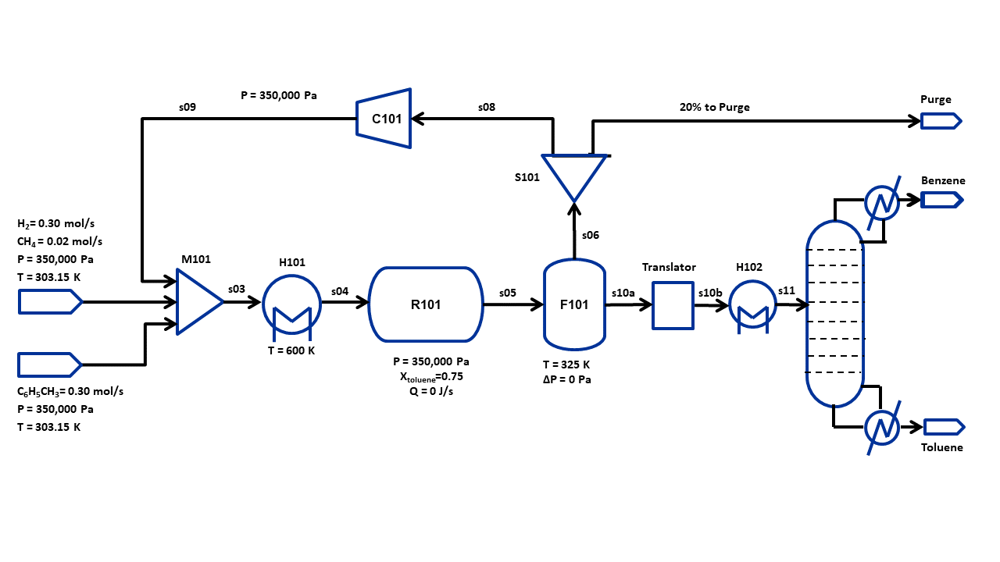

HDA Flowsheet Simulation and Optimization¶
Note¶
This tutorial will be similar to the HDA flowsheet tutorial in the Tutorials section, except that we use a distillation column instead of a second flash (F102) to produce benzene and toluene products.
Learning outcomes¶
Construct a steady-state flowsheet using the IDAES unit model library
Connecting unit models in a flowsheet using Arcs
Using the SequentialDecomposition tool to initialize a flowsheet with recycle
Fomulate and solve an optimization problem
Defining an objective function
Setting variable bounds
Adding additional constraints
Problem Statement¶
Hydrodealkylation is a chemical reaction that often involves reacting an aromatic hydrocarbon in the presence of hydrogen gas to form a simpler aromatic hydrocarbon devoid of functional groups. In this example, toluene will be reacted with hydrogen gas at high temperatures to form benzene via the following reaction:
C6H5CH3 + H2 → C6H6 + CH4
This reaction is often accompanied by an equilibrium side reaction which forms diphenyl, which we will neglect for this example.
This example is based on the 1967 AIChE Student Contest problem as present by Douglas, J.M., Chemical Design of Chemical Processes, 1988, McGraw-Hill.
The flowsheet that we will be using for this module is shown below with the stream conditions. We will be processing toluene and hydrogen to produce at least 370 TPY of benzene. As shown in the flowsheet, we use a flash tank, F101, to separate out the non-condensibles, and a distillation column, D101, to further separate the benzene-toluene mixture to improve the benzene purity. The non-condensibles separated out in F101 will be partially recycled back to M101 and the rest will be purged. We will assume ideal gas behavior for this flowsheet. The properties required for this module are defined in
hda_ideal_VLE.pyidaes.generic_models.properties.activity_coeff_models.BTX_activity_coeff_VLEhda_reaction_kinetic.py
We will be using two thermodynamic packages: one (first in the list above) containing all four components (i.e., toluene, hydrogen, benzene, and methane) and the other (second in the list above) containing benzene and toluene only. The latter is needed to simplify the VLE calculations in the distillation column model.
Translator block¶
Benzene and toluene are separated by distillation, so the process involves phase equilibrium and two-phase flow conditions. However, the presence of hydrogen and methane complicates the calculations. This is because, hydrogen and methane are non-condensable under all conditions of interest; ergo, a vapor phase will always be present, and the mixture bubble point is extremely low. To simplify the phase equilibrium calculations, hydrogen and methane will be considered completely as non-condensable and insoluble in the liquid outlet from the flash F101.
Since no hydrogen and methane will be present in the unit operations
following the flash, a different component list can be used to simplify
the property calculations. IDAES supports the definition of multiple
property packages within a single flowsheet via Translator blocks.
Translator blocks convert between different property calculations,
component lists, and equations of state.
Importing required pyomo and idaes components¶
To construct a flowsheet, we will need several components from the pyomo and idaes package. Let us first import the following components from Pyomo: - Constraint (to write constraints) - Var (to declare variables) - ConcreteModel (to create the concrete model object) - Expression (to evaluate values as a function of variables defined in the model) - Objective (to define an objective function for optimization) - SolverFactory (to solve the problem) - TransformationFactory (to apply certain transformations) - Arc (to connect two unit models) - SequentialDecomposition (to initialize the flowsheet in a sequential mode)
For further details on these components, please refer to the pyomo documentation: https://pyomo.readthedocs.io/en/latest/
from pyomo.environ import (Constraint,
Var,
ConcreteModel,
Expression,
Objective,
TransformationFactory,
value)
Inline Exercise: Import Arc and SequentialDecomposition tools
from pyomo.network
# Todo: Import the above mentioned tools from pyomo.network
from pyomo.network import Arc, SequentialDecomposition
From idaes, we will be needing the FlowsheetBlock and the following unit models: - Mixer - Heater - CSTR - Flash - Separator (splitter) - PressureChanger - Translator (to switch from one property package to another) - TrayColumn (distillation column) - CondenserType (Type of the overhead condenser: complete or partial) - TemperatureSpec (Temperature specification inside the condenser)
from idaes.core import FlowsheetBlock
from idaes.generic_models.unit_models import (PressureChanger,
Mixer,
Separator as Splitter,
Heater,
CSTR,
Flash,
Translator)
from idaes.generic_models.unit_models.column_models import TrayColumn
from idaes.generic_models.unit_models.column_models.condenser \
import CondenserType, TemperatureSpec
We will also be needing some utility tools to put together the flowsheet and calculate the degrees of freedom.
# Utility tools to put together the flowsheet and calculate the degrees of freedom
from idaes.generic_models.unit_models.pressure_changer import ThermodynamicAssumption
from idaes.core.util.model_statistics import degrees_of_freedom
from idaes.core.util.initialization import propagate_state
from idaes.core.util.misc import get_solver
import idaes.core.util.scaling as iscale
# Import idaes logger to set output levels
import idaes.logger as idaeslog
Importing required thermo and reaction packages¶
Finally, we import the thermophysical (hda_ideal_VLE.py and
BTXParameterBlock) packages and reaction package
(hda_reaction_kinetic.py) for the HDA process. We have created
custom thermophysical packages that assume ideal gas behavior with
support for VLE. The reaction package consists of the stochiometric
coefficients for the reaction, heat of reaction, and kinetic information
(Arrhenius constant and activation energy).
import hda_reaction_kinetic as reaction_props
from idaes.generic_models.properties.activity_coeff_models.\
BTX_activity_coeff_VLE import BTXParameterBlock
from hda_ideal_VLE import HDAParameterBlock
Constructing the Flowsheet¶
We have now imported all the components, unit models, and property modules we need to construct a flowsheet. Let us create a ConcreteModel and add the flowsheet block to it.
# Create a Pyomo Concrete Model to contain the problem
m = ConcreteModel()
# Add a steady state flowsheet block to the model
m.fs = FlowsheetBlock(default={"dynamic": False})
We will now add the thermophysical and reaction packages to the flowsheet.
# Property package for benzene, toluene, hydrogen, methane mixture
m.fs.BTHM_params = HDAParameterBlock()
# Property package for the benzene-toluene mixture
m.fs.BT_params = BTXParameterBlock(default={
"valid_phase": ('Liq', 'Vap'),
"activity_coeff_model": "Ideal"
})
# Reaction package for the HDA reaction
m.fs.reaction_params = reaction_props.HDAReactionParameterBlock(
default={"property_package": m.fs.BTHM_params})
Adding Unit Models¶
Let us start adding the unit models we have imported to the flowsheet.
Here, we are adding the Mixer (assigned a name M101) and a Heater
(assigned a name H101). Note that, all unit models need to be given a
property package argument. In addition, the Mixer unit model needs a
list consisting of the inlets (toluene feed, hydrogen feed and vapor
recycle streams in this case).
# Adding the mixer M101 to the flowsheet
m.fs.M101 = Mixer(default={"property_package": m.fs.BTHM_params,
"inlet_list": ["toluene_feed", "hydrogen_feed", "vapor_recycle"]})
# Adding the heater H101 to the flowsheet
m.fs.H101 = Heater(default={"property_package": m.fs.BTHM_params,
"has_phase_equilibrium": True})
Inline Exercise: Let us now add the CSTR (assign the name R101) and pass the following arguments:
“property_package”: m.fs.BTHM_params
“reaction_package”: m.fs.reaction_params
“has_heat_of_reaction”: True
“has_heat_transfer”: True
# Todo: Add reactor with the specifications above
m.fs.R101 = CSTR(
default={"property_package": m.fs.BTHM_params,
"reaction_package": m.fs.reaction_params,
"has_heat_of_reaction": True,
"has_heat_transfer": True})
Let us now add the Flash (assign the name F101), Splitter (assign the name S101) and PressureChanger (assign the name C101)
# Adding the flash tank F101 to the flowsheet
m.fs.F101 = Flash(default={"property_package": m.fs.BTHM_params,
"has_heat_transfer": True,
"has_pressure_change": True})
# Adding the splitter S101 to the flowsheet
m.fs.S101 = Splitter(default={"property_package": m.fs.BTHM_params,
"outlet_list": ["purge", "recycle"]})
# Adding the compressor C101 to the flowsheet
m.fs.C101 = PressureChanger(default={
"property_package": m.fs.BTHM_params,
"compressor": True,
"thermodynamic_assumption": ThermodynamicAssumption.isothermal})
Remark¶
Currently, the SequentialDecomposition() tool, which we will later
be using to initialize the flowsheet, does not support the distillation
column model. Thus, we will first simulate the flowsheet without the
distillation column. After it converges, we will then add the
distillation column, initialize it, and simulate the entire flowsheet.
As mentioned above, we use the m.fs.BTHM_params package, which
contains all the four species, for the reactor loop, and the simpler
m.fs.BT_params for unit operations following the flash (i.e., heater
H102 and the distillation column D101). We define a Translator block
to link the source property package and the package it is to be
translated to in the following manner:
# Add translator block to convert between property packages
m.fs.translator = Translator(default={
"inlet_property_package": m.fs.BTHM_params,
"outlet_property_package": m.fs.BT_params
})
Translator block constraints¶
The Translator block needs to know how to translate between the two
property packages. This must be custom coded for each application
because of the generality of the IDAES framework.
For this process, five constraints are required based on the state variables used in the outgoing process.
Since we assumed that only benzene and toluene are present in the liquid phase, the total molar flowrate must be the sum of molar flowrates of benzene and toluene, respectively.
Temperature of the inlet and outlet streams must be the same.
Pressure of the inlet and outgoing streams must be the same
The mole fraction of benzene in the outgoing stream is the ratio of the molar flowrate of liquid benzene in the inlet to the sum of molar flowrates of liquid benzene and toluene in the inlet.
The mole fraction of toluene in the outgoing stream is the ratio of the molar flowrate of liquid toluene in the inlet to the sum of molar flowrates of liquid benzene and toluene in the inlet.
# Add constraint: Total flow = benzene flow + toluene flow (molar)
m.fs.translator.eq_total_flow = Constraint(
expr=m.fs.translator.outlet.flow_mol[0] ==
m.fs.translator.inlet.flow_mol_phase_comp[0, "Liq", "benzene"] +
m.fs.translator.inlet.flow_mol_phase_comp[0, "Liq", "toluene"])
# Add constraint: Outlet temperature = Inlet temperature
m.fs.translator.eq_temperature = Constraint(
expr=m.fs.translator.outlet.temperature[0] ==
m.fs.translator.inlet.temperature[0])
In the above, note that the variable flow_mol_phase_comp has the index - [time, phase, component]. As this is a steady-state flowsheet, the time index by default is 0. The valid phases are [“Liq”, “Vap”]. Similarly the valid component list is [“benzene”, “toluene”, “hydrogen”, “methane”].
Inline Exercise: Add the constraint to ensure that the outlet pressure is the same as the inlet pressure
# Todo: Add constraint: Outlet pressure = Inlet pressure
m.fs.translator.eq_pressure = Constraint(
expr=m.fs.translator.outlet.pressure[0] ==
m.fs.translator.inlet.pressure[0])
# Remaining constraints on the translator block
# Add constraint: Benzene mole fraction definition
m.fs.translator.eq_mole_frac_benzene = Constraint(
expr=m.fs.translator.outlet.mole_frac_comp[0, "benzene"] ==
m.fs.translator.inlet.flow_mol_phase_comp[0, "Liq", "benzene"] /
(m.fs.translator.inlet.flow_mol_phase_comp[0, "Liq", "benzene"] +
m.fs.translator.inlet.flow_mol_phase_comp[0, "Liq", "toluene"]))
# Add constraint: Toluene mole fraction definition
m.fs.translator.eq_mole_frac_toluene = Constraint(
expr=m.fs.translator.outlet.mole_frac_comp[0, "toluene"] ==
m.fs.translator.inlet.flow_mol_phase_comp[0, "Liq", "toluene"] /
(m.fs.translator.inlet.flow_mol_phase_comp[0, "Liq", "benzene"] +
m.fs.translator.inlet.flow_mol_phase_comp[0, "Liq", "toluene"]))
Inline Exercise: Finally, let us add the Heater H102 in the same way as H101 but pass the m.fs.BT_params thermodynamic package. We will add the distillation column after converging the flowsheet.
# Todo: Add the Heater H102 to the flowsheet
m.fs.H102 = Heater(default={"property_package": m.fs.BT_params,
"has_pressure_change": True,
"has_phase_equilibrium": True})
Connecting Unit Models using Arcs¶
We have now added the initial set of unit models to the flowsheet.
However, we have not yet specifed how the units are connected. To do
this, we will be using the Arc which is a pyomo component that takes
in two arguments: source and destination. Let us connect the
outlet of the mixer (M101) to the inlet of the heater (H101).
m.fs.s03 = Arc(source=m.fs.M101.outlet, destination=m.fs.H101.inlet)
Inline Exercise: Now, connect the H101 outlet to the R101 inlet using the cell above as a guide.
# Todo: Connect the H101 outlet to R101 inlet
m.fs.s04 = Arc(source=m.fs.H101.outlet, destination=m.fs.R101.inlet)
We will now be connecting the rest of the units as shown below. Notice how the outlet names are different for the flash tank as it has a vapor and a liquid outlet.
m.fs.s05 = Arc(source=m.fs.R101.outlet, destination=m.fs.F101.inlet)
m.fs.s06 = Arc(source=m.fs.F101.vap_outlet, destination=m.fs.S101.inlet)
m.fs.s08 = Arc(source=m.fs.S101.recycle, destination=m.fs.C101.inlet)
m.fs.s09 = Arc(source=m.fs.C101.outlet,
destination=m.fs.M101.vapor_recycle)
m.fs.s10a = Arc(source=m.fs.F101.liq_outlet,
destination=m.fs.translator.inlet)
m.fs.s10b = Arc(source=m.fs.translator.outlet,
destination=m.fs.H102.inlet)
We have now connected the unit model block using the arcs. However, each of these arcs link to ports on the two unit models that are connected. In this case, the ports consist of the state variables that need to be linked between the unit models. Pyomo provides a convenient method to write these equality constraints for us between two ports and this is done as follows:
TransformationFactory("network.expand_arcs").apply_to(m)
Appending additional constraints to the model¶
Now, we will see how we can add additional constraints to the model
using Constraint from Pyomo.
Consider the reactor R101. By default, the conversion of a component is not calculated when we simulate the flowsheet. If we are interested either in specifying or constraining the conversion value, we can add the following constraint to calculate the conversion:
We add the constraint to the model as shown below.
# Define the conversion variables using 'Var'
m.fs.R101.conversion = Var(initialize=0.75, bounds=(0, 1))
# Append the constraint to the model
m.fs.R101.conv_constraint = Constraint(
expr=m.fs.R101.conversion*m.fs.R101.inlet.
flow_mol_phase_comp[0, "Vap", "toluene"] ==
(m.fs.R101.inlet.flow_mol_phase_comp[0, "Vap", "toluene"] -
m.fs.R101.outlet.flow_mol_phase_comp[0, "Vap", "toluene"]))
Fixing feed conditions and Initializing the flowsheet¶
Let us first check how many degrees of freedom exist for this flowsheet
using the degrees_of_freedom tool we imported earlier.
print(degrees_of_freedom(m))
29
We will now be fixing the toluene feed stream to the conditions shown in the flowsheet above. Please note that though this is a pure toluene feed, the remaining components are still assigned a very small non-zero value to help with convergence and initializing.
m.fs.M101.toluene_feed.flow_mol_phase_comp[0, "Vap", "benzene"].fix(1e-5)
m.fs.M101.toluene_feed.flow_mol_phase_comp[0, "Vap", "toluene"].fix(1e-5)
m.fs.M101.toluene_feed.flow_mol_phase_comp[0, "Vap", "hydrogen"].fix(1e-5)
m.fs.M101.toluene_feed.flow_mol_phase_comp[0, "Vap", "methane"].fix(1e-5)
m.fs.M101.toluene_feed.flow_mol_phase_comp[0, "Liq", "benzene"].fix(1e-5)
m.fs.M101.toluene_feed.flow_mol_phase_comp[0, "Liq", "toluene"].fix(0.30)
m.fs.M101.toluene_feed.flow_mol_phase_comp[0, "Liq", "hydrogen"].fix(1e-5)
m.fs.M101.toluene_feed.flow_mol_phase_comp[0, "Liq", "methane"].fix(1e-5)
m.fs.M101.toluene_feed.temperature.fix(303.2)
m.fs.M101.toluene_feed.pressure.fix(350000)
Similarly, let us fix the hydrogen feed to the following conditions in the next cell:
FH2 = 0.30 mol/s
FCH4 = 0.02 mol/s
Remaining components = 1e-5 mol/s
T = 303.2 K
P = 350000 Pa
m.fs.M101.hydrogen_feed.flow_mol_phase_comp[0, "Vap", "benzene"].fix(1e-5)
m.fs.M101.hydrogen_feed.flow_mol_phase_comp[0, "Vap", "toluene"].fix(1e-5)
m.fs.M101.hydrogen_feed.flow_mol_phase_comp[0, "Vap", "hydrogen"].fix(0.30)
m.fs.M101.hydrogen_feed.flow_mol_phase_comp[0, "Vap", "methane"].fix(0.02)
m.fs.M101.hydrogen_feed.flow_mol_phase_comp[0, "Liq", "benzene"].fix(1e-5)
m.fs.M101.hydrogen_feed.flow_mol_phase_comp[0, "Liq", "toluene"].fix(1e-5)
m.fs.M101.hydrogen_feed.flow_mol_phase_comp[0, "Liq", "hydrogen"].fix(1e-5)
m.fs.M101.hydrogen_feed.flow_mol_phase_comp[0, "Liq", "methane"].fix(1e-5)
m.fs.M101.hydrogen_feed.temperature.fix(303.2)
m.fs.M101.hydrogen_feed.pressure.fix(350000)
Fixing unit model specifications¶
Now that we have fixed our inlet feed conditions, we will now be fixing the operating conditions for the unit models in the flowsheet. Let us set the H101 outlet temperature to 600 K.
# Fix the temperature of the outlet from the heater H101
m.fs.H101.outlet.temperature.fix(600)
Inline Exercise: Set the conditions for the reactor R101 to the following conditions:
conversion= 0.75heat_duty= 0
Use Shift+Enter to run the cell once you have typed in your code.
# Todo: Fix the 'conversion' of the reactor R101
m.fs.R101.conversion.fix(0.75)
# Todo: Fix the 'heat_duty' of the reactor R101
m.fs.R101.heat_duty.fix(0)
The Flash conditions for F101 can be set as follows.
# Fix the temperature of the vapor outlet from F101
m.fs.F101.vap_outlet.temperature.fix(325.0)
# Fix the pressure drop in the flash F101
m.fs.F101.deltaP.fix(0)
Let us fix the split fraction of the purge stream from the splitter S101 and the outlet pressure from the compressor C101
# Fix the split fraction of the 'purge' stream from S101
m.fs.S101.split_fraction[0, "purge"].fix(0.2)
# Fix the pressure of the outlet from the compressor C101
m.fs.C101.outlet.pressure.fix(350000)
Finally, let us fix the temperature of the outlet from H102 and the pressure drop in H102 as the following
# Fix the temperature of the outlet from the heater H102
m.fs.H102.outlet.temperature.fix(375)
# Fix the pressure drop in the heater H102
m.fs.H102.deltaP.fix(-200000)
To avoid convergence issues associated with poorly scaled variables
and/or constraints, we scale the variables and constraints corresponding
to the heater H101 and the reactor R101. Scaling factors for the flow
rates, temperature, pressure, etc. have been defined in the property
package: hda_ideal_VLE.py file. Here, we set scaling factors only
for the heat duty of the heater, the reaction extent, heat duty and
volume of the reactor.
# Set scaling factors for heat duty, reaction extent and volume
iscale.set_scaling_factor(m.fs.H101.control_volume.heat, 1e-2)
iscale.set_scaling_factor(m.fs.R101.control_volume.rate_reaction_extent, 1)
iscale.set_scaling_factor(m.fs.R101.control_volume.heat, 1e-2)
iscale.set_scaling_factor(m.fs.R101.control_volume.volume, 1)
# Set the scaling factors for the remaining variables and all constraints
iscale.calculate_scaling_factors(m.fs.H101)
iscale.calculate_scaling_factors(m.fs.R101)
Inline Exercise: We have now defined all the feed conditions and the inputs required for the unit models. The system should now have 0 degrees of freedom i.e. should be a square problem. Please check that the degrees of freedom is 0.
Use Shift+Enter to run the cell once you have typed in your code.
# Todo: Check the degrees of freedom
print(degrees_of_freedom(m))
0
Initialization¶
This subsection will demonstrate how to use the built-in sequential decomposition tool to initialize our flowsheet.
Let us first create an object for the SequentialDecomposition and
specify our options for this.
seq = SequentialDecomposition()
seq.options.select_tear_method = "heuristic"
seq.options.tear_method = "Wegstein"
seq.options.iterLim = 3
# Using the SD tool
G = seq.create_graph(m)
heuristic_tear_set = seq.tear_set_arcs(G, method="heuristic")
order = seq.calculation_order(G)
Which is the tear stream? Display tear set and order
for o in heuristic_tear_set:
print(o.name)
fs.s03
What sequence did the SD tool determine to solve this flowsheet with the least number of tears?
for o in order:
print(o[0].name)
fs.H101
fs.R101
fs.F101
fs.S101
fs.C101
fs.M101
The SequentialDecomposition tool has determined that the tear stream is the mixer outlet (s03 in the Figure above). We will need to provide a reasonable guess for this.
For the initial guess, we assume that the flowrate of the recycle stream (s09) is zero. Consequently, the flow rate of the stream s03 is simply the sum of the flowrates of the toluene feed and hydrogen feed streams. Further, since the temperature and the pressure of both the toluene and hydrogen feed streams are the same, we specify their values as the initial guess for the temperature and pressure of the stream s03.
tear_guesses = {
"flow_mol_phase_comp": {
(0, "Vap", "benzene"): 1e-5,
(0, "Vap", "toluene"): 1e-5,
(0, "Vap", "hydrogen"): 0.30,
(0, "Vap", "methane"): 0.02,
(0, "Liq", "benzene"): 1e-5,
(0, "Liq", "toluene"): 0.30,
(0, "Liq", "hydrogen"): 1e-5,
(0, "Liq", "methane"): 1e-5},
"temperature": {0: 303},
"pressure": {0: 350000}}
# Pass the tear_guess to the SD tool
seq.set_guesses_for(m.fs.H101.inlet, tear_guesses)
Next, we need to tell the tool how to initialize a particular unit. We will be writing a python function which takes in a “unit” and calls the initialize method on that unit.
def function(unit):
unit.initialize(outlvl=idaeslog.INFO)
We are now ready to initialize our flowsheet in a sequential mode. Note that we specifically set the iteration limit to be 3 as we are trying to use this tool only to get a good set of initial values such that IPOPT can then take over and solve this flowsheet for us.
seq.run(m, function)
2022-03-16 23:24:24 [INFO] idaes.init.fs.H101.control_volume: Initialization Complete
2022-03-16 23:24:24 [INFO] idaes.init.fs.H101: Initialization Complete: optimal - Optimal Solution Found
2022-03-16 23:24:24 [INFO] idaes.init.fs.R101.control_volume: Initialization Complete
2022-03-16 23:24:24 [INFO] idaes.init.fs.R101: Initialization Complete: optimal - Optimal Solution Found
2022-03-16 23:24:24 [INFO] idaes.init.fs.F101.control_volume: Initialization Complete
2022-03-16 23:24:24 [INFO] idaes.init.fs.F101: Initialization Complete: optimal - Optimal Solution Found
WARNING (W1002): Setting Var
'fs.S101.purge_state[0.0].flow_mol_phase_comp[Liq,benzene]' to a numeric
value 2e-09 outside the bounds (1e-08, 100).
See also https://pyomo.readthedocs.io/en/stable/errors.html#w1002
WARNING (W1002): Setting Var
'fs.S101.purge_state[0.0].flow_mol_phase_comp[Liq,toluene]' to a numeric
value 2e-09 outside the bounds (1e-08, 100).
See also https://pyomo.readthedocs.io/en/stable/errors.html#w1002
WARNING (W1002): Setting Var
'fs.S101.purge_state[0.0].flow_mol_phase_comp[Liq,methane]' to a numeric
value 2e-09 outside the bounds (1e-08, 100).
See also https://pyomo.readthedocs.io/en/stable/errors.html#w1002
WARNING (W1002): Setting Var
'fs.S101.purge_state[0.0].flow_mol_phase_comp[Liq,hydrogen]' to a numeric
value 2e-09 outside the bounds (1e-08, 100).
See also https://pyomo.readthedocs.io/en/stable/errors.html#w1002
2022-03-16 23:24:24 [INFO] idaes.init.fs.S101.purge_state: Initialization Complete
WARNING (W1002): Setting Var
'fs.S101.recycle_state[0.0].flow_mol_phase_comp[Liq,benzene]' to a numeric
value 5e-09 outside the bounds (1e-08, 100).
See also https://pyomo.readthedocs.io/en/stable/errors.html#w1002
WARNING (W1002): Setting Var
'fs.S101.recycle_state[0.0].flow_mol_phase_comp[Liq,toluene]' to a numeric
value 5e-09 outside the bounds (1e-08, 100).
See also https://pyomo.readthedocs.io/en/stable/errors.html#w1002
WARNING (W1002): Setting Var
'fs.S101.recycle_state[0.0].flow_mol_phase_comp[Liq,methane]' to a numeric
value 5e-09 outside the bounds (1e-08, 100).
See also https://pyomo.readthedocs.io/en/stable/errors.html#w1002
WARNING (W1002): Setting Var
'fs.S101.recycle_state[0.0].flow_mol_phase_comp[Liq,hydrogen]' to a
numeric value 5e-09 outside the bounds (1e-08, 100).
See also https://pyomo.readthedocs.io/en/stable/errors.html#w1002
2022-03-16 23:24:24 [INFO] idaes.init.fs.S101.recycle_state: Initialization Complete
2022-03-16 23:24:24 [INFO] idaes.init.fs.S101: Initialization Step 2 Complete: optimal - Optimal Solution Found
2022-03-16 23:24:24 [INFO] idaes.init.fs.translator.properties_out: Initialization Step 1 optimal - Optimal Solution Found.
2022-03-16 23:24:24 [INFO] idaes.init.fs.translator.properties_out: Initialization Step 2 optimal - Optimal Solution Found.
2022-03-16 23:24:24 [INFO] idaes.init.fs.translator.properties_out: Initialization Step 3 optimal - Optimal Solution Found.
2022-03-16 23:24:24 [INFO] idaes.init.fs.translator.properties_out: Initialization Step 4 optimal - Optimal Solution Found.
2022-03-16 23:24:24 [INFO] idaes.init.fs.translator.properties_out: Initialization Step 5 optimal - Optimal Solution Found.
2022-03-16 23:24:24 [INFO] idaes.init.fs.translator.properties_out: State Released.
2022-03-16 23:24:24 [INFO] idaes.init.fs.translator.properties_out: Initialization Complete: optimal - Optimal Solution Found
2022-03-16 23:24:24 [INFO] idaes.init.fs.translator: Initialization Complete optimal - Optimal Solution Found.
2022-03-16 23:24:24 [INFO] idaes.init.fs.C101.control_volume: Initialization Complete
2022-03-16 23:24:24 [INFO] idaes.init.fs.C101: Initialization Complete: optimal - Optimal Solution Found
2022-03-16 23:24:24 [INFO] idaes.init.fs.H102.control_volume.properties_in: Initialization Step 1 optimal - Optimal Solution Found.
2022-03-16 23:24:24 [INFO] idaes.init.fs.H102.control_volume.properties_in: Initialization Step 2 optimal - Optimal Solution Found.
2022-03-16 23:24:24 [INFO] idaes.init.fs.H102.control_volume.properties_in: Initialization Step 3 optimal - Optimal Solution Found.
2022-03-16 23:24:24 [INFO] idaes.init.fs.H102.control_volume.properties_in: Initialization Step 4 optimal - Optimal Solution Found.
2022-03-16 23:24:24 [INFO] idaes.init.fs.H102.control_volume.properties_in: Initialization Step 5 optimal - Optimal Solution Found.
2022-03-16 23:24:24 [INFO] idaes.init.fs.H102.control_volume.properties_out: Initialization Step 1 optimal - Optimal Solution Found.
2022-03-16 23:24:24 [INFO] idaes.init.fs.H102.control_volume.properties_out: Initialization Step 2 optimal - Optimal Solution Found.
2022-03-16 23:24:24 [INFO] idaes.init.fs.H102.control_volume.properties_out: Initialization Step 3 optimal - Optimal Solution Found.
2022-03-16 23:24:24 [INFO] idaes.init.fs.H102.control_volume.properties_out: Initialization Step 4 optimal - Optimal Solution Found.
2022-03-16 23:24:24 [INFO] idaes.init.fs.H102.control_volume.properties_out: Initialization Step 5 optimal - Optimal Solution Found.
2022-03-16 23:24:24 [INFO] idaes.init.fs.H102.control_volume.properties_out: State Released.
2022-03-16 23:24:24 [INFO] idaes.init.fs.H102.control_volume: Initialization Complete
2022-03-16 23:24:24 [INFO] idaes.init.fs.H102.control_volume.properties_in: State Released.
2022-03-16 23:24:24 [INFO] idaes.init.fs.H102: Initialization Complete: optimal - Optimal Solution Found
2022-03-16 23:24:25 [INFO] idaes.init.fs.M101.mixed_state: Initialization Complete
2022-03-16 23:24:25 [INFO] idaes.init.fs.M101: Initialization Complete: optimal - Optimal Solution Found
2022-03-16 23:24:25 [INFO] idaes.init.fs.H101.control_volume: Initialization Complete
2022-03-16 23:24:25 [INFO] idaes.init.fs.H101: Initialization Complete: optimal - Optimal Solution Found
2022-03-16 23:24:25 [INFO] idaes.init.fs.R101.control_volume: Initialization Complete
2022-03-16 23:24:25 [INFO] idaes.init.fs.R101: Initialization Complete: optimal - Optimal Solution Found
2022-03-16 23:24:25 [INFO] idaes.init.fs.F101.control_volume: Initialization Complete
2022-03-16 23:24:25 [INFO] idaes.init.fs.F101: Initialization Complete: optimal - Optimal Solution Found
WARNING (W1002): Setting Var
'fs.S101.purge_state[0.0].flow_mol_phase_comp[Liq,benzene]' to a numeric
value 2e-09 outside the bounds (1e-08, 100).
See also https://pyomo.readthedocs.io/en/stable/errors.html#w1002
WARNING (W1002): Setting Var
'fs.S101.purge_state[0.0].flow_mol_phase_comp[Liq,toluene]' to a numeric
value 2e-09 outside the bounds (1e-08, 100).
See also https://pyomo.readthedocs.io/en/stable/errors.html#w1002
WARNING (W1002): Setting Var
'fs.S101.purge_state[0.0].flow_mol_phase_comp[Liq,methane]' to a numeric
value 2e-09 outside the bounds (1e-08, 100).
See also https://pyomo.readthedocs.io/en/stable/errors.html#w1002
WARNING (W1002): Setting Var
'fs.S101.purge_state[0.0].flow_mol_phase_comp[Liq,hydrogen]' to a numeric
value 2e-09 outside the bounds (1e-08, 100).
See also https://pyomo.readthedocs.io/en/stable/errors.html#w1002
2022-03-16 23:24:25 [INFO] idaes.init.fs.S101.purge_state: Initialization Complete
WARNING (W1002): Setting Var
'fs.S101.recycle_state[0.0].flow_mol_phase_comp[Liq,benzene]' to a numeric
value 7.999997599999522e-09 outside the bounds (1e-08, 100).
See also https://pyomo.readthedocs.io/en/stable/errors.html#w1002
WARNING (W1002): Setting Var
'fs.S101.recycle_state[0.0].flow_mol_phase_comp[Liq,toluene]' to a numeric
value 7.999997599999522e-09 outside the bounds (1e-08, 100).
See also https://pyomo.readthedocs.io/en/stable/errors.html#w1002
WARNING (W1002): Setting Var
'fs.S101.recycle_state[0.0].flow_mol_phase_comp[Liq,methane]' to a numeric
value 7.999997599999522e-09 outside the bounds (1e-08, 100).
See also https://pyomo.readthedocs.io/en/stable/errors.html#w1002
WARNING (W1002): Setting Var
'fs.S101.recycle_state[0.0].flow_mol_phase_comp[Liq,hydrogen]' to a
numeric value 7.999997599999522e-09 outside the bounds (1e-08, 100).
See also https://pyomo.readthedocs.io/en/stable/errors.html#w1002
2022-03-16 23:24:25 [INFO] idaes.init.fs.S101.recycle_state: Initialization Complete
2022-03-16 23:24:25 [INFO] idaes.init.fs.S101: Initialization Step 2 Complete: optimal - Optimal Solution Found
2022-03-16 23:24:25 [INFO] idaes.init.fs.C101.control_volume: Initialization Complete
2022-03-16 23:24:25 [INFO] idaes.init.fs.C101: Initialization Complete: optimal - Optimal Solution Found
2022-03-16 23:24:25 [INFO] idaes.init.fs.M101.mixed_state: Initialization Complete
2022-03-16 23:24:25 [INFO] idaes.init.fs.M101: Initialization Complete: optimal - Optimal Solution Found
2022-03-16 23:24:25 [INFO] idaes.init.fs.H101.control_volume: Initialization Complete
2022-03-16 23:24:25 [INFO] idaes.init.fs.H101: Initialization Complete: optimal - Optimal Solution Found
2022-03-16 23:24:25 [INFO] idaes.init.fs.R101.control_volume: Initialization Complete
2022-03-16 23:24:25 [INFO] idaes.init.fs.R101: Initialization Complete: optimal - Optimal Solution Found
2022-03-16 23:24:25 [INFO] idaes.init.fs.F101.control_volume: Initialization Complete
2022-03-16 23:24:25 [INFO] idaes.init.fs.F101: Initialization Complete: optimal - Optimal Solution Found
WARNING (W1002): Setting Var
'fs.S101.purge_state[0.0].flow_mol_phase_comp[Liq,benzene]' to a numeric
value 2e-09 outside the bounds (1e-08, 100).
See also https://pyomo.readthedocs.io/en/stable/errors.html#w1002
WARNING (W1002): Setting Var
'fs.S101.purge_state[0.0].flow_mol_phase_comp[Liq,toluene]' to a numeric
value 2e-09 outside the bounds (1e-08, 100).
See also https://pyomo.readthedocs.io/en/stable/errors.html#w1002
WARNING (W1002): Setting Var
'fs.S101.purge_state[0.0].flow_mol_phase_comp[Liq,methane]' to a numeric
value 2e-09 outside the bounds (1e-08, 100).
See also https://pyomo.readthedocs.io/en/stable/errors.html#w1002
WARNING (W1002): Setting Var
'fs.S101.purge_state[0.0].flow_mol_phase_comp[Liq,hydrogen]' to a numeric
value 2e-09 outside the bounds (1e-08, 100).
See also https://pyomo.readthedocs.io/en/stable/errors.html#w1002
2022-03-16 23:24:25 [INFO] idaes.init.fs.S101.purge_state: Initialization Complete
WARNING (W1002): Setting Var
'fs.S101.recycle_state[0.0].flow_mol_phase_comp[Liq,benzene]' to a numeric
value 7.99999999976048e-09 outside the bounds (1e-08, 100).
See also https://pyomo.readthedocs.io/en/stable/errors.html#w1002
WARNING (W1002): Setting Var
'fs.S101.recycle_state[0.0].flow_mol_phase_comp[Liq,toluene]' to a numeric
value 7.99999999976048e-09 outside the bounds (1e-08, 100).
See also https://pyomo.readthedocs.io/en/stable/errors.html#w1002
WARNING (W1002): Setting Var
'fs.S101.recycle_state[0.0].flow_mol_phase_comp[Liq,methane]' to a numeric
value 7.99999999976048e-09 outside the bounds (1e-08, 100).
See also https://pyomo.readthedocs.io/en/stable/errors.html#w1002
WARNING (W1002): Setting Var
'fs.S101.recycle_state[0.0].flow_mol_phase_comp[Liq,hydrogen]' to a
numeric value 7.99999999976048e-09 outside the bounds (1e-08, 100).
See also https://pyomo.readthedocs.io/en/stable/errors.html#w1002
2022-03-16 23:24:25 [INFO] idaes.init.fs.S101.recycle_state: Initialization Complete
2022-03-16 23:24:25 [INFO] idaes.init.fs.S101: Initialization Step 2 Complete: optimal - Optimal Solution Found
2022-03-16 23:24:25 [INFO] idaes.init.fs.C101.control_volume: Initialization Complete
2022-03-16 23:24:25 [INFO] idaes.init.fs.C101: Initialization Complete: optimal - Optimal Solution Found
2022-03-16 23:24:25 [INFO] idaes.init.fs.M101.mixed_state: Initialization Complete
2022-03-16 23:24:25 [INFO] idaes.init.fs.M101: Initialization Complete: optimal - Optimal Solution Found
2022-03-16 23:24:25 [INFO] idaes.init.fs.H101.control_volume: Initialization Complete
2022-03-16 23:24:25 [INFO] idaes.init.fs.H101: Initialization Complete: optimal - Optimal Solution Found
2022-03-16 23:24:25 [INFO] idaes.init.fs.R101.control_volume: Initialization Complete
2022-03-16 23:24:25 [INFO] idaes.init.fs.R101: Initialization Complete: optimal - Optimal Solution Found
2022-03-16 23:24:25 [INFO] idaes.init.fs.F101.control_volume: Initialization Complete
2022-03-16 23:24:25 [INFO] idaes.init.fs.F101: Initialization Complete: optimal - Optimal Solution Found
WARNING (W1002): Setting Var
'fs.S101.purge_state[0.0].flow_mol_phase_comp[Liq,benzene]' to a numeric
value 2e-09 outside the bounds (1e-08, 100).
See also https://pyomo.readthedocs.io/en/stable/errors.html#w1002
WARNING (W1002): Setting Var
'fs.S101.purge_state[0.0].flow_mol_phase_comp[Liq,toluene]' to a numeric
value 2e-09 outside the bounds (1e-08, 100).
See also https://pyomo.readthedocs.io/en/stable/errors.html#w1002
WARNING (W1002): Setting Var
'fs.S101.purge_state[0.0].flow_mol_phase_comp[Liq,methane]' to a numeric
value 2e-09 outside the bounds (1e-08, 100).
See also https://pyomo.readthedocs.io/en/stable/errors.html#w1002
WARNING (W1002): Setting Var
'fs.S101.purge_state[0.0].flow_mol_phase_comp[Liq,hydrogen]' to a numeric
value 2e-09 outside the bounds (1e-08, 100).
See also https://pyomo.readthedocs.io/en/stable/errors.html#w1002
2022-03-16 23:24:25 [INFO] idaes.init.fs.S101.purge_state: Initialization Complete
WARNING (W1002): Setting Var
'fs.S101.recycle_state[0.0].flow_mol_phase_comp[Liq,benzene]' to a numeric
value 7.999999999999976e-09 outside the bounds (1e-08, 100).
See also https://pyomo.readthedocs.io/en/stable/errors.html#w1002
WARNING (W1002): Setting Var
'fs.S101.recycle_state[0.0].flow_mol_phase_comp[Liq,toluene]' to a numeric
value 7.999999999999976e-09 outside the bounds (1e-08, 100).
See also https://pyomo.readthedocs.io/en/stable/errors.html#w1002
WARNING (W1002): Setting Var
'fs.S101.recycle_state[0.0].flow_mol_phase_comp[Liq,methane]' to a numeric
value 7.999999999999976e-09 outside the bounds (1e-08, 100).
See also https://pyomo.readthedocs.io/en/stable/errors.html#w1002
WARNING (W1002): Setting Var
'fs.S101.recycle_state[0.0].flow_mol_phase_comp[Liq,hydrogen]' to a
numeric value 7.999999999999976e-09 outside the bounds (1e-08, 100).
See also https://pyomo.readthedocs.io/en/stable/errors.html#w1002
2022-03-16 23:24:25 [INFO] idaes.init.fs.S101.recycle_state: Initialization Complete
2022-03-16 23:24:25 [INFO] idaes.init.fs.S101: Initialization Step 2 Complete: optimal - Optimal Solution Found
2022-03-16 23:24:25 [INFO] idaes.init.fs.C101.control_volume: Initialization Complete
2022-03-16 23:24:25 [INFO] idaes.init.fs.C101: Initialization Complete: optimal - Optimal Solution Found
2022-03-16 23:24:25 [INFO] idaes.init.fs.M101.mixed_state: Initialization Complete
2022-03-16 23:24:25 [INFO] idaes.init.fs.M101: Initialization Complete: optimal - Optimal Solution Found
2022-03-16 23:24:25 [INFO] idaes.init.fs.H101.control_volume: Initialization Complete
2022-03-16 23:24:25 [INFO] idaes.init.fs.H101: Initialization Complete: optimal - Optimal Solution Found
2022-03-16 23:24:26 [INFO] idaes.init.fs.R101.control_volume: Initialization Complete
2022-03-16 23:24:26 [INFO] idaes.init.fs.R101: Initialization Complete: optimal - Optimal Solution Found
2022-03-16 23:24:26 [INFO] idaes.init.fs.F101.control_volume: Initialization Complete
2022-03-16 23:24:26 [INFO] idaes.init.fs.F101: Initialization Complete: optimal - Optimal Solution Found
WARNING (W1002): Setting Var
'fs.S101.purge_state[0.0].flow_mol_phase_comp[Liq,benzene]' to a numeric
value 2e-09 outside the bounds (1e-08, 100).
See also https://pyomo.readthedocs.io/en/stable/errors.html#w1002
WARNING (W1002): Setting Var
'fs.S101.purge_state[0.0].flow_mol_phase_comp[Liq,toluene]' to a numeric
value 2e-09 outside the bounds (1e-08, 100).
See also https://pyomo.readthedocs.io/en/stable/errors.html#w1002
WARNING (W1002): Setting Var
'fs.S101.purge_state[0.0].flow_mol_phase_comp[Liq,methane]' to a numeric
value 2e-09 outside the bounds (1e-08, 100).
See also https://pyomo.readthedocs.io/en/stable/errors.html#w1002
WARNING (W1002): Setting Var
'fs.S101.purge_state[0.0].flow_mol_phase_comp[Liq,hydrogen]' to a numeric
value 2e-09 outside the bounds (1e-08, 100).
See also https://pyomo.readthedocs.io/en/stable/errors.html#w1002
2022-03-16 23:24:26 [INFO] idaes.init.fs.S101.purge_state: Initialization Complete
WARNING (W1002): Setting Var
'fs.S101.recycle_state[0.0].flow_mol_phase_comp[Liq,benzene]' to a numeric
value 8e-09 outside the bounds (1e-08, 100).
See also https://pyomo.readthedocs.io/en/stable/errors.html#w1002
WARNING (W1002): Setting Var
'fs.S101.recycle_state[0.0].flow_mol_phase_comp[Liq,toluene]' to a numeric
value 8e-09 outside the bounds (1e-08, 100).
See also https://pyomo.readthedocs.io/en/stable/errors.html#w1002
WARNING (W1002): Setting Var
'fs.S101.recycle_state[0.0].flow_mol_phase_comp[Liq,methane]' to a numeric
value 8e-09 outside the bounds (1e-08, 100).
See also https://pyomo.readthedocs.io/en/stable/errors.html#w1002
WARNING (W1002): Setting Var
'fs.S101.recycle_state[0.0].flow_mol_phase_comp[Liq,hydrogen]' to a
numeric value 8e-09 outside the bounds (1e-08, 100).
See also https://pyomo.readthedocs.io/en/stable/errors.html#w1002
2022-03-16 23:24:26 [INFO] idaes.init.fs.S101.recycle_state: Initialization Complete
2022-03-16 23:24:26 [INFO] idaes.init.fs.S101: Initialization Step 2 Complete: optimal - Optimal Solution Found
2022-03-16 23:24:26 [INFO] idaes.init.fs.C101.control_volume: Initialization Complete
2022-03-16 23:24:26 [INFO] idaes.init.fs.C101: Initialization Complete: optimal - Optimal Solution Found
2022-03-16 23:24:26 [INFO] idaes.init.fs.M101.mixed_state: Initialization Complete
2022-03-16 23:24:26 [INFO] idaes.init.fs.M101: Initialization Complete: optimal - Optimal Solution Found
WARNING: Wegstein failed to converge in 3 iterations
2022-03-16 23:24:26 [INFO] idaes.init.fs.translator.properties_out: Initialization Step 1 optimal - Optimal Solution Found.
2022-03-16 23:24:26 [INFO] idaes.init.fs.translator.properties_out: Initialization Step 2 optimal - Optimal Solution Found.
2022-03-16 23:24:26 [INFO] idaes.init.fs.translator.properties_out: Initialization Step 3 optimal - Optimal Solution Found.
2022-03-16 23:24:26 [INFO] idaes.init.fs.translator.properties_out: Initialization Step 4 optimal - Optimal Solution Found.
2022-03-16 23:24:26 [INFO] idaes.init.fs.translator.properties_out: Initialization Step 5 optimal - Optimal Solution Found.
2022-03-16 23:24:26 [INFO] idaes.init.fs.translator.properties_out: State Released.
2022-03-16 23:24:26 [INFO] idaes.init.fs.translator.properties_out: Initialization Complete: optimal - Optimal Solution Found
2022-03-16 23:24:26 [INFO] idaes.init.fs.translator: Initialization Complete optimal - Optimal Solution Found.
2022-03-16 23:24:26 [INFO] idaes.init.fs.H102.control_volume.properties_in: Initialization Step 1 optimal - Optimal Solution Found.
2022-03-16 23:24:26 [INFO] idaes.init.fs.H102.control_volume.properties_in: Initialization Step 2 optimal - Optimal Solution Found.
2022-03-16 23:24:26 [INFO] idaes.init.fs.H102.control_volume.properties_in: Initialization Step 3 optimal - Optimal Solution Found.
2022-03-16 23:24:26 [INFO] idaes.init.fs.H102.control_volume.properties_in: Initialization Step 4 optimal - Optimal Solution Found.
2022-03-16 23:24:26 [INFO] idaes.init.fs.H102.control_volume.properties_in: Initialization Step 5 optimal - Optimal Solution Found.
2022-03-16 23:24:26 [INFO] idaes.init.fs.H102.control_volume.properties_out: Initialization Step 1 optimal - Optimal Solution Found.
2022-03-16 23:24:26 [INFO] idaes.init.fs.H102.control_volume.properties_out: Initialization Step 2 optimal - Optimal Solution Found.
2022-03-16 23:24:26 [INFO] idaes.init.fs.H102.control_volume.properties_out: Initialization Step 3 optimal - Optimal Solution Found.
2022-03-16 23:24:26 [INFO] idaes.init.fs.H102.control_volume.properties_out: Initialization Step 4 optimal - Optimal Solution Found.
2022-03-16 23:24:26 [INFO] idaes.init.fs.H102.control_volume.properties_out: Initialization Step 5 optimal - Optimal Solution Found.
2022-03-16 23:24:26 [INFO] idaes.init.fs.H102.control_volume.properties_out: State Released.
2022-03-16 23:24:26 [INFO] idaes.init.fs.H102.control_volume: Initialization Complete
2022-03-16 23:24:26 [INFO] idaes.init.fs.H102.control_volume.properties_in: State Released.
2022-03-16 23:24:26 [INFO] idaes.init.fs.H102: Initialization Complete: optimal - Optimal Solution Found
Inline Exercise: We have now initialized the flowsheet. Let us run the flowsheet in a simulation mode to look at the results.
# Create the solver object
solver = get_solver()
# Solve the model
results = solver.solve(m, tee=True)
Ipopt 3.13.2: nlp_scaling_method=gradient-based
tol=1e-06
**************************************************************************
This program contains Ipopt, a library for large-scale nonlinear optimization.
Ipopt is released as open source code under the Eclipse Public License (EPL).
For more information visit http://projects.coin-or.org/Ipopt
This version of Ipopt was compiled from source code available at
https://github.com/IDAES/Ipopt as part of the Institute for the Design of
Advanced Energy Systems Process Systems Engineering Framework (IDAES PSE
Framework) Copyright (c) 2018-2019. See https://github.com/IDAES/idaes-pse.
This version of Ipopt was compiled using HSL, a collection of Fortran codes
for large-scale scientific computation. All technical papers, sales and
publicity material resulting from use of the HSL codes within IPOPT must
contain the following acknowledgement:
HSL, a collection of Fortran codes for large-scale scientific
computation. See http://www.hsl.rl.ac.uk.
**************************************************************************
This is Ipopt version 3.13.2, running with linear solver ma27.
Number of nonzeros in equality constraint Jacobian...: 1097
Number of nonzeros in inequality constraint Jacobian.: 0
Number of nonzeros in Lagrangian Hessian.............: 832
Total number of variables............................: 363
variables with only lower bounds: 8
variables with lower and upper bounds: 155
variables with only upper bounds: 0
Total number of equality constraints.................: 363
Total number of inequality constraints...............: 0
inequality constraints with only lower bounds: 0
inequality constraints with lower and upper bounds: 0
inequality constraints with only upper bounds: 0
iter objective inf_pr inf_du lg(mu) ||d|| lg(rg) alpha_du alpha_pr ls
0 0.0000000e+00 6.34e+04 1.00e+00 -1.0 0.00e+00 - 0.00e+00 0.00e+00 0
1 0.0000000e+00 8.69e+03 1.40e+03 -1.0 2.00e+04 - 9.72e-01 4.67e-01H 1
2 0.0000000e+00 1.29e+03 1.56e+03 -1.0 1.60e+04 - 9.80e-01 4.90e-01h 1
3 0.0000000e+00 9.71e+02 1.48e+05 -1.0 1.40e+04 - 9.90e-01 4.94e-01h 1
4 0.0000000e+00 5.96e+02 1.91e+07 -1.0 8.49e+03 - 1.00e+00 5.27e-01h 1
5 0.0000000e+00 1.16e+02 2.65e+11 -1.0 4.37e+03 - 1.00e+00 9.86e-01h 1
6 0.0000000e+00 5.42e+01 1.91e+09 -1.0 1.58e+02 - 1.00e+00 5.31e-01h 1
7 0.0000000e+00 5.22e-01 2.70e+11 -1.0 7.42e+01 - 1.00e+00 9.90e-01h 1
8 0.0000000e+00 1.59e-02 6.29e+09 -1.0 7.09e-01 - 1.00e+00 1.00e+00h 1
9 0.0000000e+00 7.45e-09 6.37e+03 -1.0 1.50e-07 - 1.00e+00 1.00e+00h 1
Cannot recompute multipliers for feasibility problem. Error in eq_mult_calculator
Number of Iterations....: 9
(scaled) (unscaled)
Objective...............: 0.0000000000000000e+00 0.0000000000000000e+00
Dual infeasibility......: 1.0331968839446240e+11 1.0331968839446240e+11
Constraint violation....: 2.9103830456733704e-11 7.4505805969238281e-09
Complementarity.........: 0.0000000000000000e+00 0.0000000000000000e+00
Overall NLP error.......: 2.9103830456733704e-11 1.0331968839446240e+11
Number of objective function evaluations = 11
Number of objective gradient evaluations = 10
Number of equality constraint evaluations = 11
Number of inequality constraint evaluations = 0
Number of equality constraint Jacobian evaluations = 10
Number of inequality constraint Jacobian evaluations = 0
Number of Lagrangian Hessian evaluations = 9
Total CPU secs in IPOPT (w/o function evaluations) = 0.015
Total CPU secs in NLP function evaluations = 0.001
EXIT: Optimal Solution Found.
Add distillation column¶
As mentioned earlier, the SequentialDecomposition tool currently
does not support the distillation column model. Thus, we have not
included the distillation column in the flowsheet. Now that we have a
converged flowsheet, we will add the distillation column and simulate
the entire flowsheet.
In the following, we will - Add the distillation column - Connect it to the heater - Add the necessary equality constraints - Propogate the state variable information from the outlet of the heater to the inlet of the distillation column - Fix the degrees of freedom of the distillation block (reflux ratio, boilup ratio, and condenser pressure) - Initialize the distillation block.
# Add distillation column to the flowsheet
m.fs.D101 = TrayColumn(default={
"number_of_trays": 10,
"feed_tray_location": 5,
"condenser_type":
CondenserType.totalCondenser,
"condenser_temperature_spec":
TemperatureSpec.atBubblePoint,
"property_package": m.fs.BT_params})
# Connect the outlet from the heater H102 to the distillation column
m.fs.s11 = Arc(source=m.fs.H102.outlet,
destination=m.fs.D101.feed)
# Add the necessary equality constraints
TransformationFactory("network.expand_arcs").apply_to(m)
# Propagate the state
propagate_state(m.fs.s11)
# Fix the reflux ratio, boilup ratio, and the condenser pressure
m.fs.D101.condenser.reflux_ratio.fix(0.5)
m.fs.D101.reboiler.boilup_ratio.fix(0.5)
m.fs.D101.condenser.condenser_pressure.fix(150000)
# Initialize the distillation column
m.fs.D101.initialize(outlvl=idaeslog.INFO)
WARNING: Implicitly replacing the Component attribute _temperature_ref
(type=<class 'pyomo.core.base.var.IndexedVar'>) on block
fs.D101.rectification_section[1] with a new Component (type=<class
'pyomo.core.base.var.IndexedVar'>). This is usually indicative of a
modelling error. To avoid this warning, use block.del_component() and
block.add_component().
WARNING: Implicitly replacing the Component attribute _pressure_ref
(type=<class 'pyomo.core.base.var.IndexedVar'>) on block
fs.D101.rectification_section[1] with a new Component (type=<class
'pyomo.core.base.var.IndexedVar'>). This is usually indicative of a
modelling error. To avoid this warning, use block.del_component() and
block.add_component().
WARNING: Implicitly replacing the Component attribute _temperature_ref
(type=<class 'pyomo.core.base.var.IndexedVar'>) on block
fs.D101.rectification_section[2] with a new Component (type=<class
'pyomo.core.base.var.IndexedVar'>). This is usually indicative of a
modelling error. To avoid this warning, use block.del_component() and
block.add_component().
WARNING: Implicitly replacing the Component attribute _pressure_ref
(type=<class 'pyomo.core.base.var.IndexedVar'>) on block
fs.D101.rectification_section[2] with a new Component (type=<class
'pyomo.core.base.var.IndexedVar'>). This is usually indicative of a
modelling error. To avoid this warning, use block.del_component() and
block.add_component().
WARNING: Implicitly replacing the Component attribute _temperature_ref
(type=<class 'pyomo.core.base.var.IndexedVar'>) on block
fs.D101.rectification_section[3] with a new Component (type=<class
'pyomo.core.base.var.IndexedVar'>). This is usually indicative of a
modelling error. To avoid this warning, use block.del_component() and
block.add_component().
WARNING: Implicitly replacing the Component attribute _pressure_ref
(type=<class 'pyomo.core.base.var.IndexedVar'>) on block
fs.D101.rectification_section[3] with a new Component (type=<class
'pyomo.core.base.var.IndexedVar'>). This is usually indicative of a
modelling error. To avoid this warning, use block.del_component() and
block.add_component().
WARNING: Implicitly replacing the Component attribute _temperature_ref
(type=<class 'pyomo.core.base.var.IndexedVar'>) on block
fs.D101.rectification_section[4] with a new Component (type=<class
'pyomo.core.base.var.IndexedVar'>). This is usually indicative of a
modelling error. To avoid this warning, use block.del_component() and
block.add_component().
WARNING: Implicitly replacing the Component attribute _pressure_ref
(type=<class 'pyomo.core.base.var.IndexedVar'>) on block
fs.D101.rectification_section[4] with a new Component (type=<class
'pyomo.core.base.var.IndexedVar'>). This is usually indicative of a
modelling error. To avoid this warning, use block.del_component() and
block.add_component().
WARNING: Implicitly replacing the Component attribute _temperature_ref
(type=<class 'pyomo.core.base.var.IndexedVar'>) on block fs.D101.feed_tray
with a new Component (type=<class 'pyomo.core.base.var.IndexedVar'>). This
is usually indicative of a modelling error. To avoid this warning, use
block.del_component() and block.add_component().
WARNING: Implicitly replacing the Component attribute _pressure_ref
(type=<class 'pyomo.core.base.var.IndexedVar'>) on block fs.D101.feed_tray
with a new Component (type=<class 'pyomo.core.base.var.IndexedVar'>). This
is usually indicative of a modelling error. To avoid this warning, use
block.del_component() and block.add_component().
WARNING: Implicitly replacing the Component attribute _temperature_ref
(type=<class 'pyomo.core.base.var.IndexedVar'>) on block
fs.D101.stripping_section[6] with a new Component (type=<class
'pyomo.core.base.var.IndexedVar'>). This is usually indicative of a
modelling error. To avoid this warning, use block.del_component() and
block.add_component().
WARNING: Implicitly replacing the Component attribute _pressure_ref
(type=<class 'pyomo.core.base.var.IndexedVar'>) on block
fs.D101.stripping_section[6] with a new Component (type=<class
'pyomo.core.base.var.IndexedVar'>). This is usually indicative of a
modelling error. To avoid this warning, use block.del_component() and
block.add_component().
WARNING: Implicitly replacing the Component attribute _temperature_ref
(type=<class 'pyomo.core.base.var.IndexedVar'>) on block
fs.D101.stripping_section[7] with a new Component (type=<class
'pyomo.core.base.var.IndexedVar'>). This is usually indicative of a
modelling error. To avoid this warning, use block.del_component() and
block.add_component().
WARNING: Implicitly replacing the Component attribute _pressure_ref
(type=<class 'pyomo.core.base.var.IndexedVar'>) on block
fs.D101.stripping_section[7] with a new Component (type=<class
'pyomo.core.base.var.IndexedVar'>). This is usually indicative of a
modelling error. To avoid this warning, use block.del_component() and
block.add_component().
WARNING: Implicitly replacing the Component attribute _temperature_ref
(type=<class 'pyomo.core.base.var.IndexedVar'>) on block
fs.D101.stripping_section[8] with a new Component (type=<class
'pyomo.core.base.var.IndexedVar'>). This is usually indicative of a
modelling error. To avoid this warning, use block.del_component() and
block.add_component().
WARNING: Implicitly replacing the Component attribute _pressure_ref
(type=<class 'pyomo.core.base.var.IndexedVar'>) on block
fs.D101.stripping_section[8] with a new Component (type=<class
'pyomo.core.base.var.IndexedVar'>). This is usually indicative of a
modelling error. To avoid this warning, use block.del_component() and
block.add_component().
WARNING: Implicitly replacing the Component attribute _temperature_ref
(type=<class 'pyomo.core.base.var.IndexedVar'>) on block
fs.D101.stripping_section[9] with a new Component (type=<class
'pyomo.core.base.var.IndexedVar'>). This is usually indicative of a
modelling error. To avoid this warning, use block.del_component() and
block.add_component().
WARNING: Implicitly replacing the Component attribute _pressure_ref
(type=<class 'pyomo.core.base.var.IndexedVar'>) on block
fs.D101.stripping_section[9] with a new Component (type=<class
'pyomo.core.base.var.IndexedVar'>). This is usually indicative of a
modelling error. To avoid this warning, use block.del_component() and
block.add_component().
WARNING: Implicitly replacing the Component attribute _temperature_ref
(type=<class 'pyomo.core.base.var.IndexedVar'>) on block
fs.D101.stripping_section[10] with a new Component (type=<class
'pyomo.core.base.var.IndexedVar'>). This is usually indicative of a
modelling error. To avoid this warning, use block.del_component() and
block.add_component().
WARNING: Implicitly replacing the Component attribute _pressure_ref
(type=<class 'pyomo.core.base.var.IndexedVar'>) on block
fs.D101.stripping_section[10] with a new Component (type=<class
'pyomo.core.base.var.IndexedVar'>). This is usually indicative of a
modelling error. To avoid this warning, use block.del_component() and
block.add_component().
2022-03-16 23:24:26 [INFO] idaes.init.fs.D101: Begin initialization.
2022-03-16 23:24:26 [INFO] idaes.init.fs.D101.feed_tray: Begin initialization.
2022-03-16 23:24:26 [INFO] idaes.init.fs.D101.feed_tray.properties_in_feed: Initialization Step 1 optimal - Optimal Solution Found.
2022-03-16 23:24:26 [INFO] idaes.init.fs.D101.feed_tray.properties_in_feed: Initialization Step 2 optimal - Optimal Solution Found.
2022-03-16 23:24:26 [INFO] idaes.init.fs.D101.feed_tray.properties_in_feed: Initialization Step 3 optimal - Optimal Solution Found.
2022-03-16 23:24:26 [INFO] idaes.init.fs.D101.feed_tray.properties_in_feed: Initialization Step 4 optimal - Optimal Solution Found.
2022-03-16 23:24:26 [INFO] idaes.init.fs.D101.feed_tray.properties_in_feed: Initialization Step 5 optimal - Optimal Solution Found.
2022-03-16 23:24:27 [INFO] idaes.init.fs.D101.feed_tray.properties_in_liq: Initialization Step 1 optimal - Optimal Solution Found.
2022-03-16 23:24:27 [INFO] idaes.init.fs.D101.feed_tray.properties_in_liq: Initialization Step 2 optimal - Optimal Solution Found.
2022-03-16 23:24:27 [INFO] idaes.init.fs.D101.feed_tray.properties_in_liq: Initialization Step 3 optimal - Optimal Solution Found.
2022-03-16 23:24:27 [INFO] idaes.init.fs.D101.feed_tray.properties_in_liq: Initialization Step 4 optimal - Optimal Solution Found.
2022-03-16 23:24:27 [INFO] idaes.init.fs.D101.feed_tray.properties_in_liq: Initialization Step 5 optimal - Optimal Solution Found.
2022-03-16 23:24:27 [INFO] idaes.init.fs.D101.feed_tray.properties_in_vap: Initialization Step 1 optimal - Optimal Solution Found.
2022-03-16 23:24:27 [INFO] idaes.init.fs.D101.feed_tray.properties_in_vap: Initialization Step 2 optimal - Optimal Solution Found.
2022-03-16 23:24:27 [INFO] idaes.init.fs.D101.feed_tray.properties_in_vap: Initialization Step 3 optimal - Optimal Solution Found.
2022-03-16 23:24:27 [INFO] idaes.init.fs.D101.feed_tray.properties_in_vap: Initialization Step 4 optimal - Optimal Solution Found.
2022-03-16 23:24:27 [INFO] idaes.init.fs.D101.feed_tray.properties_in_vap: Initialization Step 5 optimal - Optimal Solution Found.
2022-03-16 23:24:27 [INFO] idaes.init.fs.D101.feed_tray.properties_out: Initialization Step 1 optimal - Optimal Solution Found.
2022-03-16 23:24:27 [INFO] idaes.init.fs.D101.feed_tray.properties_out: Initialization Step 2 optimal - Optimal Solution Found.
2022-03-16 23:24:27 [INFO] idaes.init.fs.D101.feed_tray.properties_out: Initialization Step 3 optimal - Optimal Solution Found.
2022-03-16 23:24:27 [INFO] idaes.init.fs.D101.feed_tray.properties_out: Initialization Step 4 optimal - Optimal Solution Found.
2022-03-16 23:24:27 [INFO] idaes.init.fs.D101.feed_tray.properties_out: Initialization Step 5 optimal - Optimal Solution Found.
2022-03-16 23:24:27 [INFO] idaes.init.fs.D101.feed_tray.properties_out: State Released.
2022-03-16 23:24:27 [INFO] idaes.init.fs.D101.feed_tray.properties_out: Initialization Complete: optimal - Optimal Solution Found
2022-03-16 23:24:27 [INFO] idaes.init.fs.D101.feed_tray: Mass balance solve optimal - Optimal Solution Found.
2022-03-16 23:24:27 [INFO] idaes.init.fs.D101.feed_tray: Mass and energy balance solve optimal - Optimal Solution Found.
2022-03-16 23:24:27 [INFO] idaes.init.fs.D101.feed_tray: Mass, energy and pressure balance solve optimal - Optimal Solution Found.
2022-03-16 23:24:27 [INFO] idaes.init.fs.D101.feed_tray: Initialization complete, status optimal - Optimal Solution Found.
2022-03-16 23:24:27 [INFO] idaes.init.fs.D101.feed_tray.properties_in_liq: State Released.
2022-03-16 23:24:27 [INFO] idaes.init.fs.D101.feed_tray.properties_in_vap: State Released.
2022-03-16 23:24:27 [INFO] idaes.init.fs.D101.condenser.control_volume.properties_in: Initialization Step 1 optimal - Optimal Solution Found.
2022-03-16 23:24:27 [INFO] idaes.init.fs.D101.condenser.control_volume.properties_in: Initialization Step 2 optimal - Optimal Solution Found.
2022-03-16 23:24:27 [INFO] idaes.init.fs.D101.condenser.control_volume.properties_in: Initialization Step 3 optimal - Optimal Solution Found.
2022-03-16 23:24:27 [INFO] idaes.init.fs.D101.condenser.control_volume.properties_in: Initialization Step 4 optimal - Optimal Solution Found.
2022-03-16 23:24:27 [INFO] idaes.init.fs.D101.condenser.control_volume.properties_in: Initialization Step 5 optimal - Optimal Solution Found.
2022-03-16 23:24:27 [INFO] idaes.init.fs.D101.condenser.control_volume.properties_out: Initialization Step 1 optimal - Optimal Solution Found.
2022-03-16 23:24:27 [INFO] idaes.init.fs.D101.condenser.control_volume.properties_out: Initialization Step 2 optimal - Optimal Solution Found.
2022-03-16 23:24:27 [INFO] idaes.init.fs.D101.condenser.control_volume.properties_out: Initialization Step 3 optimal - Optimal Solution Found.
2022-03-16 23:24:27 [INFO] idaes.init.fs.D101.condenser.control_volume.properties_out: Initialization Step 4 optimal - Optimal Solution Found.
2022-03-16 23:24:27 [INFO] idaes.init.fs.D101.condenser.control_volume.properties_out: Initialization Step 5 optimal - Optimal Solution Found.
2022-03-16 23:24:27 [INFO] idaes.init.fs.D101.condenser.control_volume.properties_out: State Released.
2022-03-16 23:24:27 [INFO] idaes.init.fs.D101.condenser.control_volume: Initialization Complete
2022-03-16 23:24:27 [INFO] idaes.init.fs.D101.condenser: Initialization Complete, optimal - Optimal Solution Found.
2022-03-16 23:24:27 [INFO] idaes.init.fs.D101.condenser.control_volume.properties_in: State Released.
2022-03-16 23:24:27 [INFO] idaes.init.fs.D101.reboiler.control_volume.properties_in: Initialization Step 1 optimal - Optimal Solution Found.
2022-03-16 23:24:27 [INFO] idaes.init.fs.D101.reboiler.control_volume.properties_in: Initialization Step 2 optimal - Optimal Solution Found.
2022-03-16 23:24:27 [INFO] idaes.init.fs.D101.reboiler.control_volume.properties_in: Initialization Step 3 optimal - Optimal Solution Found.
2022-03-16 23:24:27 [INFO] idaes.init.fs.D101.reboiler.control_volume.properties_in: Initialization Step 4 optimal - Optimal Solution Found.
2022-03-16 23:24:27 [INFO] idaes.init.fs.D101.reboiler.control_volume.properties_in: Initialization Step 5 optimal - Optimal Solution Found.
2022-03-16 23:24:27 [INFO] idaes.init.fs.D101.reboiler.control_volume.properties_out: Initialization Step 1 optimal - Optimal Solution Found.
2022-03-16 23:24:27 [INFO] idaes.init.fs.D101.reboiler.control_volume.properties_out: Initialization Step 2 optimal - Optimal Solution Found.
2022-03-16 23:24:27 [INFO] idaes.init.fs.D101.reboiler.control_volume.properties_out: Initialization Step 3 optimal - Optimal Solution Found.
2022-03-16 23:24:27 [INFO] idaes.init.fs.D101.reboiler.control_volume.properties_out: Initialization Step 4 optimal - Optimal Solution Found.
2022-03-16 23:24:27 [INFO] idaes.init.fs.D101.reboiler.control_volume.properties_out: Initialization Step 5 optimal - Optimal Solution Found.
2022-03-16 23:24:27 [INFO] idaes.init.fs.D101.reboiler.control_volume.properties_out: State Released.
2022-03-16 23:24:27 [INFO] idaes.init.fs.D101.reboiler.control_volume.properties_out: Initialization Complete: optimal - Optimal Solution Found
2022-03-16 23:24:27 [INFO] idaes.init.fs.D101.reboiler: Initialization Complete, optimal - Optimal Solution Found.
2022-03-16 23:24:27 [INFO] idaes.init.fs.D101.reboiler.control_volume.properties_in: State Released.
2022-03-16 23:24:27 [INFO] idaes.init.fs.D101.rectification_section[1]: Begin initialization.
2022-03-16 23:24:27 [INFO] idaes.init.fs.D101.rectification_section[1].properties_in_liq: Initialization Step 1 optimal - Optimal Solution Found.
2022-03-16 23:24:27 [INFO] idaes.init.fs.D101.rectification_section[1].properties_in_liq: Initialization Step 2 optimal - Optimal Solution Found.
2022-03-16 23:24:27 [INFO] idaes.init.fs.D101.rectification_section[1].properties_in_liq: Initialization Step 3 optimal - Optimal Solution Found.
2022-03-16 23:24:27 [INFO] idaes.init.fs.D101.rectification_section[1].properties_in_liq: Initialization Step 4 optimal - Optimal Solution Found.
2022-03-16 23:24:27 [INFO] idaes.init.fs.D101.rectification_section[1].properties_in_liq: Initialization Step 5 optimal - Optimal Solution Found.
2022-03-16 23:24:27 [INFO] idaes.init.fs.D101.rectification_section[1].properties_in_vap: Initialization Step 1 optimal - Optimal Solution Found.
2022-03-16 23:24:27 [INFO] idaes.init.fs.D101.rectification_section[1].properties_in_vap: Initialization Step 2 optimal - Optimal Solution Found.
2022-03-16 23:24:27 [INFO] idaes.init.fs.D101.rectification_section[1].properties_in_vap: Initialization Step 3 optimal - Optimal Solution Found.
2022-03-16 23:24:27 [INFO] idaes.init.fs.D101.rectification_section[1].properties_in_vap: Initialization Step 4 optimal - Optimal Solution Found.
2022-03-16 23:24:27 [INFO] idaes.init.fs.D101.rectification_section[1].properties_in_vap: Initialization Step 5 optimal - Optimal Solution Found.
2022-03-16 23:24:27 [INFO] idaes.init.fs.D101.rectification_section[1].properties_out: Initialization Step 1 optimal - Optimal Solution Found.
2022-03-16 23:24:27 [INFO] idaes.init.fs.D101.rectification_section[1].properties_out: Initialization Step 2 optimal - Optimal Solution Found.
2022-03-16 23:24:27 [INFO] idaes.init.fs.D101.rectification_section[1].properties_out: Initialization Step 3 optimal - Optimal Solution Found.
2022-03-16 23:24:27 [INFO] idaes.init.fs.D101.rectification_section[1].properties_out: Initialization Step 4 optimal - Optimal Solution Found.
2022-03-16 23:24:27 [INFO] idaes.init.fs.D101.rectification_section[1].properties_out: Initialization Step 5 optimal - Optimal Solution Found.
2022-03-16 23:24:27 [INFO] idaes.init.fs.D101.rectification_section[1].properties_out: State Released.
2022-03-16 23:24:27 [INFO] idaes.init.fs.D101.rectification_section[1].properties_out: Initialization Complete: optimal - Optimal Solution Found
2022-03-16 23:24:27 [INFO] idaes.init.fs.D101.rectification_section[1]: Mass balance solve optimal - Optimal Solution Found.
2022-03-16 23:24:27 [INFO] idaes.init.fs.D101.rectification_section[1]: Mass and energy balance solve optimal - Optimal Solution Found.
2022-03-16 23:24:27 [INFO] idaes.init.fs.D101.rectification_section[1]: Mass, energy and pressure balance solve optimal - Optimal Solution Found.
2022-03-16 23:24:27 [INFO] idaes.init.fs.D101.rectification_section[1]: Initialization complete, status optimal - Optimal Solution Found.
2022-03-16 23:24:27 [INFO] idaes.init.fs.D101.rectification_section[1].properties_in_vap: State Released.
2022-03-16 23:24:27 [INFO] idaes.init.fs.D101.rectification_section[2]: Begin initialization.
2022-03-16 23:24:27 [INFO] idaes.init.fs.D101.rectification_section[2].properties_in_liq: Initialization Step 1 optimal - Optimal Solution Found.
2022-03-16 23:24:27 [INFO] idaes.init.fs.D101.rectification_section[2].properties_in_liq: Initialization Step 2 optimal - Optimal Solution Found.
2022-03-16 23:24:27 [INFO] idaes.init.fs.D101.rectification_section[2].properties_in_liq: Initialization Step 3 optimal - Optimal Solution Found.
2022-03-16 23:24:27 [INFO] idaes.init.fs.D101.rectification_section[2].properties_in_liq: Initialization Step 4 optimal - Optimal Solution Found.
2022-03-16 23:24:27 [INFO] idaes.init.fs.D101.rectification_section[2].properties_in_liq: Initialization Step 5 optimal - Optimal Solution Found.
2022-03-16 23:24:28 [INFO] idaes.init.fs.D101.rectification_section[2].properties_in_vap: Initialization Step 1 optimal - Optimal Solution Found.
2022-03-16 23:24:28 [INFO] idaes.init.fs.D101.rectification_section[2].properties_in_vap: Initialization Step 2 optimal - Optimal Solution Found.
2022-03-16 23:24:28 [INFO] idaes.init.fs.D101.rectification_section[2].properties_in_vap: Initialization Step 3 optimal - Optimal Solution Found.
2022-03-16 23:24:28 [INFO] idaes.init.fs.D101.rectification_section[2].properties_in_vap: Initialization Step 4 optimal - Optimal Solution Found.
2022-03-16 23:24:28 [INFO] idaes.init.fs.D101.rectification_section[2].properties_in_vap: Initialization Step 5 optimal - Optimal Solution Found.
2022-03-16 23:24:28 [INFO] idaes.init.fs.D101.rectification_section[2].properties_out: Initialization Step 1 optimal - Optimal Solution Found.
2022-03-16 23:24:28 [INFO] idaes.init.fs.D101.rectification_section[2].properties_out: Initialization Step 2 optimal - Optimal Solution Found.
2022-03-16 23:24:28 [INFO] idaes.init.fs.D101.rectification_section[2].properties_out: Initialization Step 3 optimal - Optimal Solution Found.
2022-03-16 23:24:28 [INFO] idaes.init.fs.D101.rectification_section[2].properties_out: Initialization Step 4 optimal - Optimal Solution Found.
2022-03-16 23:24:28 [INFO] idaes.init.fs.D101.rectification_section[2].properties_out: Initialization Step 5 optimal - Optimal Solution Found.
2022-03-16 23:24:28 [INFO] idaes.init.fs.D101.rectification_section[2].properties_out: State Released.
2022-03-16 23:24:28 [INFO] idaes.init.fs.D101.rectification_section[2].properties_out: Initialization Complete: optimal - Optimal Solution Found
2022-03-16 23:24:28 [INFO] idaes.init.fs.D101.rectification_section[2]: Mass balance solve optimal - Optimal Solution Found.
2022-03-16 23:24:28 [INFO] idaes.init.fs.D101.rectification_section[2]: Mass and energy balance solve optimal - Optimal Solution Found.
2022-03-16 23:24:28 [INFO] idaes.init.fs.D101.rectification_section[2]: Mass, energy and pressure balance solve optimal - Optimal Solution Found.
2022-03-16 23:24:28 [INFO] idaes.init.fs.D101.rectification_section[2]: Initialization complete, status optimal - Optimal Solution Found.
2022-03-16 23:24:28 [INFO] idaes.init.fs.D101.rectification_section[2].properties_in_vap: State Released.
2022-03-16 23:24:28 [INFO] idaes.init.fs.D101.rectification_section[2].properties_in_liq: State Released.
2022-03-16 23:24:28 [INFO] idaes.init.fs.D101.rectification_section[3]: Begin initialization.
2022-03-16 23:24:28 [INFO] idaes.init.fs.D101.rectification_section[3].properties_in_liq: Initialization Step 1 optimal - Optimal Solution Found.
2022-03-16 23:24:28 [INFO] idaes.init.fs.D101.rectification_section[3].properties_in_liq: Initialization Step 2 optimal - Optimal Solution Found.
2022-03-16 23:24:28 [INFO] idaes.init.fs.D101.rectification_section[3].properties_in_liq: Initialization Step 3 optimal - Optimal Solution Found.
2022-03-16 23:24:28 [INFO] idaes.init.fs.D101.rectification_section[3].properties_in_liq: Initialization Step 4 optimal - Optimal Solution Found.
2022-03-16 23:24:28 [INFO] idaes.init.fs.D101.rectification_section[3].properties_in_liq: Initialization Step 5 optimal - Optimal Solution Found.
2022-03-16 23:24:28 [INFO] idaes.init.fs.D101.rectification_section[3].properties_in_vap: Initialization Step 1 optimal - Optimal Solution Found.
2022-03-16 23:24:28 [INFO] idaes.init.fs.D101.rectification_section[3].properties_in_vap: Initialization Step 2 optimal - Optimal Solution Found.
2022-03-16 23:24:28 [INFO] idaes.init.fs.D101.rectification_section[3].properties_in_vap: Initialization Step 3 optimal - Optimal Solution Found.
2022-03-16 23:24:28 [INFO] idaes.init.fs.D101.rectification_section[3].properties_in_vap: Initialization Step 4 optimal - Optimal Solution Found.
2022-03-16 23:24:28 [INFO] idaes.init.fs.D101.rectification_section[3].properties_in_vap: Initialization Step 5 optimal - Optimal Solution Found.
2022-03-16 23:24:28 [INFO] idaes.init.fs.D101.rectification_section[3].properties_out: Initialization Step 1 optimal - Optimal Solution Found.
2022-03-16 23:24:28 [INFO] idaes.init.fs.D101.rectification_section[3].properties_out: Initialization Step 2 optimal - Optimal Solution Found.
2022-03-16 23:24:28 [INFO] idaes.init.fs.D101.rectification_section[3].properties_out: Initialization Step 3 optimal - Optimal Solution Found.
2022-03-16 23:24:28 [INFO] idaes.init.fs.D101.rectification_section[3].properties_out: Initialization Step 4 optimal - Optimal Solution Found.
2022-03-16 23:24:28 [INFO] idaes.init.fs.D101.rectification_section[3].properties_out: Initialization Step 5 optimal - Optimal Solution Found.
2022-03-16 23:24:28 [INFO] idaes.init.fs.D101.rectification_section[3].properties_out: State Released.
2022-03-16 23:24:28 [INFO] idaes.init.fs.D101.rectification_section[3].properties_out: Initialization Complete: optimal - Optimal Solution Found
2022-03-16 23:24:28 [INFO] idaes.init.fs.D101.rectification_section[3]: Mass balance solve optimal - Optimal Solution Found.
2022-03-16 23:24:28 [INFO] idaes.init.fs.D101.rectification_section[3]: Mass and energy balance solve optimal - Optimal Solution Found.
2022-03-16 23:24:28 [INFO] idaes.init.fs.D101.rectification_section[3]: Mass, energy and pressure balance solve optimal - Optimal Solution Found.
2022-03-16 23:24:28 [INFO] idaes.init.fs.D101.rectification_section[3]: Initialization complete, status optimal - Optimal Solution Found.
2022-03-16 23:24:28 [INFO] idaes.init.fs.D101.rectification_section[3].properties_in_vap: State Released.
2022-03-16 23:24:28 [INFO] idaes.init.fs.D101.rectification_section[3].properties_in_liq: State Released.
2022-03-16 23:24:28 [INFO] idaes.init.fs.D101.rectification_section[4]: Begin initialization.
2022-03-16 23:24:28 [INFO] idaes.init.fs.D101.rectification_section[4].properties_in_liq: Initialization Step 1 optimal - Optimal Solution Found.
2022-03-16 23:24:28 [INFO] idaes.init.fs.D101.rectification_section[4].properties_in_liq: Initialization Step 2 optimal - Optimal Solution Found.
2022-03-16 23:24:28 [INFO] idaes.init.fs.D101.rectification_section[4].properties_in_liq: Initialization Step 3 optimal - Optimal Solution Found.
2022-03-16 23:24:28 [INFO] idaes.init.fs.D101.rectification_section[4].properties_in_liq: Initialization Step 4 optimal - Optimal Solution Found.
2022-03-16 23:24:28 [INFO] idaes.init.fs.D101.rectification_section[4].properties_in_liq: Initialization Step 5 optimal - Optimal Solution Found.
2022-03-16 23:24:28 [INFO] idaes.init.fs.D101.rectification_section[4].properties_in_vap: Initialization Step 1 optimal - Optimal Solution Found.
2022-03-16 23:24:28 [INFO] idaes.init.fs.D101.rectification_section[4].properties_in_vap: Initialization Step 2 optimal - Optimal Solution Found.
2022-03-16 23:24:28 [INFO] idaes.init.fs.D101.rectification_section[4].properties_in_vap: Initialization Step 3 optimal - Optimal Solution Found.
2022-03-16 23:24:28 [INFO] idaes.init.fs.D101.rectification_section[4].properties_in_vap: Initialization Step 4 optimal - Optimal Solution Found.
2022-03-16 23:24:28 [INFO] idaes.init.fs.D101.rectification_section[4].properties_in_vap: Initialization Step 5 optimal - Optimal Solution Found.
2022-03-16 23:24:28 [INFO] idaes.init.fs.D101.rectification_section[4].properties_out: Initialization Step 1 optimal - Optimal Solution Found.
2022-03-16 23:24:28 [INFO] idaes.init.fs.D101.rectification_section[4].properties_out: Initialization Step 2 optimal - Optimal Solution Found.
2022-03-16 23:24:28 [INFO] idaes.init.fs.D101.rectification_section[4].properties_out: Initialization Step 3 optimal - Optimal Solution Found.
2022-03-16 23:24:28 [INFO] idaes.init.fs.D101.rectification_section[4].properties_out: Initialization Step 4 optimal - Optimal Solution Found.
2022-03-16 23:24:28 [INFO] idaes.init.fs.D101.rectification_section[4].properties_out: Initialization Step 5 optimal - Optimal Solution Found.
2022-03-16 23:24:28 [INFO] idaes.init.fs.D101.rectification_section[4].properties_out: State Released.
2022-03-16 23:24:28 [INFO] idaes.init.fs.D101.rectification_section[4].properties_out: Initialization Complete: optimal - Optimal Solution Found
2022-03-16 23:24:28 [INFO] idaes.init.fs.D101.rectification_section[4]: Mass balance solve optimal - Optimal Solution Found.
2022-03-16 23:24:28 [INFO] idaes.init.fs.D101.rectification_section[4]: Mass and energy balance solve optimal - Optimal Solution Found.
2022-03-16 23:24:28 [INFO] idaes.init.fs.D101.rectification_section[4]: Mass, energy and pressure balance solve optimal - Optimal Solution Found.
2022-03-16 23:24:28 [INFO] idaes.init.fs.D101.rectification_section[4]: Initialization complete, status optimal - Optimal Solution Found.
2022-03-16 23:24:28 [INFO] idaes.init.fs.D101.rectification_section[4].properties_in_liq: State Released.
2022-03-16 23:24:28 [INFO] idaes.init.fs.D101.stripping_section[6]: Begin initialization.
2022-03-16 23:24:28 [INFO] idaes.init.fs.D101.stripping_section[6].properties_in_liq: Initialization Step 1 optimal - Optimal Solution Found.
2022-03-16 23:24:28 [INFO] idaes.init.fs.D101.stripping_section[6].properties_in_liq: Initialization Step 2 optimal - Optimal Solution Found.
2022-03-16 23:24:28 [INFO] idaes.init.fs.D101.stripping_section[6].properties_in_liq: Initialization Step 3 optimal - Optimal Solution Found.
2022-03-16 23:24:28 [INFO] idaes.init.fs.D101.stripping_section[6].properties_in_liq: Initialization Step 4 optimal - Optimal Solution Found.
2022-03-16 23:24:28 [INFO] idaes.init.fs.D101.stripping_section[6].properties_in_liq: Initialization Step 5 optimal - Optimal Solution Found.
2022-03-16 23:24:28 [INFO] idaes.init.fs.D101.stripping_section[6].properties_in_vap: Initialization Step 1 optimal - Optimal Solution Found.
2022-03-16 23:24:28 [INFO] idaes.init.fs.D101.stripping_section[6].properties_in_vap: Initialization Step 2 optimal - Optimal Solution Found.
2022-03-16 23:24:28 [INFO] idaes.init.fs.D101.stripping_section[6].properties_in_vap: Initialization Step 3 optimal - Optimal Solution Found.
2022-03-16 23:24:28 [INFO] idaes.init.fs.D101.stripping_section[6].properties_in_vap: Initialization Step 4 optimal - Optimal Solution Found.
2022-03-16 23:24:28 [INFO] idaes.init.fs.D101.stripping_section[6].properties_in_vap: Initialization Step 5 optimal - Optimal Solution Found.
2022-03-16 23:24:28 [INFO] idaes.init.fs.D101.stripping_section[6].properties_out: Initialization Step 1 optimal - Optimal Solution Found.
2022-03-16 23:24:28 [INFO] idaes.init.fs.D101.stripping_section[6].properties_out: Initialization Step 2 optimal - Optimal Solution Found.
2022-03-16 23:24:29 [INFO] idaes.init.fs.D101.stripping_section[6].properties_out: Initialization Step 3 optimal - Optimal Solution Found.
2022-03-16 23:24:29 [INFO] idaes.init.fs.D101.stripping_section[6].properties_out: Initialization Step 4 optimal - Optimal Solution Found.
2022-03-16 23:24:29 [INFO] idaes.init.fs.D101.stripping_section[6].properties_out: Initialization Step 5 optimal - Optimal Solution Found.
2022-03-16 23:24:29 [INFO] idaes.init.fs.D101.stripping_section[6].properties_out: State Released.
2022-03-16 23:24:29 [INFO] idaes.init.fs.D101.stripping_section[6].properties_out: Initialization Complete: optimal - Optimal Solution Found
2022-03-16 23:24:29 [INFO] idaes.init.fs.D101.stripping_section[6]: Mass balance solve optimal - Optimal Solution Found.
2022-03-16 23:24:29 [INFO] idaes.init.fs.D101.stripping_section[6]: Mass and energy balance solve optimal - Optimal Solution Found.
2022-03-16 23:24:29 [INFO] idaes.init.fs.D101.stripping_section[6]: Mass, energy and pressure balance solve optimal - Optimal Solution Found.
2022-03-16 23:24:29 [INFO] idaes.init.fs.D101.stripping_section[6]: Initialization complete, status optimal - Optimal Solution Found.
2022-03-16 23:24:29 [INFO] idaes.init.fs.D101.stripping_section[6].properties_in_vap: State Released.
2022-03-16 23:24:29 [INFO] idaes.init.fs.D101.stripping_section[7]: Begin initialization.
2022-03-16 23:24:29 [INFO] idaes.init.fs.D101.stripping_section[7].properties_in_liq: Initialization Step 1 optimal - Optimal Solution Found.
2022-03-16 23:24:29 [INFO] idaes.init.fs.D101.stripping_section[7].properties_in_liq: Initialization Step 2 optimal - Optimal Solution Found.
2022-03-16 23:24:29 [INFO] idaes.init.fs.D101.stripping_section[7].properties_in_liq: Initialization Step 3 optimal - Optimal Solution Found.
2022-03-16 23:24:29 [INFO] idaes.init.fs.D101.stripping_section[7].properties_in_liq: Initialization Step 4 optimal - Optimal Solution Found.
2022-03-16 23:24:29 [INFO] idaes.init.fs.D101.stripping_section[7].properties_in_liq: Initialization Step 5 optimal - Optimal Solution Found.
2022-03-16 23:24:29 [INFO] idaes.init.fs.D101.stripping_section[7].properties_in_vap: Initialization Step 1 optimal - Optimal Solution Found.
2022-03-16 23:24:29 [INFO] idaes.init.fs.D101.stripping_section[7].properties_in_vap: Initialization Step 2 optimal - Optimal Solution Found.
2022-03-16 23:24:29 [INFO] idaes.init.fs.D101.stripping_section[7].properties_in_vap: Initialization Step 3 optimal - Optimal Solution Found.
2022-03-16 23:24:29 [INFO] idaes.init.fs.D101.stripping_section[7].properties_in_vap: Initialization Step 4 optimal - Optimal Solution Found.
2022-03-16 23:24:29 [INFO] idaes.init.fs.D101.stripping_section[7].properties_in_vap: Initialization Step 5 optimal - Optimal Solution Found.
2022-03-16 23:24:29 [INFO] idaes.init.fs.D101.stripping_section[7].properties_out: Initialization Step 1 optimal - Optimal Solution Found.
2022-03-16 23:24:29 [INFO] idaes.init.fs.D101.stripping_section[7].properties_out: Initialization Step 2 optimal - Optimal Solution Found.
2022-03-16 23:24:29 [INFO] idaes.init.fs.D101.stripping_section[7].properties_out: Initialization Step 3 optimal - Optimal Solution Found.
2022-03-16 23:24:29 [INFO] idaes.init.fs.D101.stripping_section[7].properties_out: Initialization Step 4 optimal - Optimal Solution Found.
2022-03-16 23:24:29 [INFO] idaes.init.fs.D101.stripping_section[7].properties_out: Initialization Step 5 optimal - Optimal Solution Found.
2022-03-16 23:24:29 [INFO] idaes.init.fs.D101.stripping_section[7].properties_out: State Released.
2022-03-16 23:24:29 [INFO] idaes.init.fs.D101.stripping_section[7].properties_out: Initialization Complete: optimal - Optimal Solution Found
2022-03-16 23:24:29 [INFO] idaes.init.fs.D101.stripping_section[7]: Mass balance solve optimal - Optimal Solution Found.
2022-03-16 23:24:29 [INFO] idaes.init.fs.D101.stripping_section[7]: Mass and energy balance solve optimal - Optimal Solution Found.
2022-03-16 23:24:29 [INFO] idaes.init.fs.D101.stripping_section[7]: Mass, energy and pressure balance solve optimal - Optimal Solution Found.
2022-03-16 23:24:29 [INFO] idaes.init.fs.D101.stripping_section[7]: Initialization complete, status optimal - Optimal Solution Found.
2022-03-16 23:24:29 [INFO] idaes.init.fs.D101.stripping_section[7].properties_in_vap: State Released.
2022-03-16 23:24:29 [INFO] idaes.init.fs.D101.stripping_section[7].properties_in_liq: State Released.
2022-03-16 23:24:29 [INFO] idaes.init.fs.D101.stripping_section[8]: Begin initialization.
2022-03-16 23:24:29 [INFO] idaes.init.fs.D101.stripping_section[8].properties_in_liq: Initialization Step 1 optimal - Optimal Solution Found.
2022-03-16 23:24:29 [INFO] idaes.init.fs.D101.stripping_section[8].properties_in_liq: Initialization Step 2 optimal - Optimal Solution Found.
2022-03-16 23:24:29 [INFO] idaes.init.fs.D101.stripping_section[8].properties_in_liq: Initialization Step 3 optimal - Optimal Solution Found.
2022-03-16 23:24:29 [INFO] idaes.init.fs.D101.stripping_section[8].properties_in_liq: Initialization Step 4 optimal - Optimal Solution Found.
2022-03-16 23:24:29 [INFO] idaes.init.fs.D101.stripping_section[8].properties_in_liq: Initialization Step 5 optimal - Optimal Solution Found.
2022-03-16 23:24:29 [INFO] idaes.init.fs.D101.stripping_section[8].properties_in_vap: Initialization Step 1 optimal - Optimal Solution Found.
2022-03-16 23:24:29 [INFO] idaes.init.fs.D101.stripping_section[8].properties_in_vap: Initialization Step 2 optimal - Optimal Solution Found.
2022-03-16 23:24:29 [INFO] idaes.init.fs.D101.stripping_section[8].properties_in_vap: Initialization Step 3 optimal - Optimal Solution Found.
2022-03-16 23:24:29 [INFO] idaes.init.fs.D101.stripping_section[8].properties_in_vap: Initialization Step 4 optimal - Optimal Solution Found.
2022-03-16 23:24:29 [INFO] idaes.init.fs.D101.stripping_section[8].properties_in_vap: Initialization Step 5 optimal - Optimal Solution Found.
2022-03-16 23:24:29 [INFO] idaes.init.fs.D101.stripping_section[8].properties_out: Initialization Step 1 optimal - Optimal Solution Found.
2022-03-16 23:24:29 [INFO] idaes.init.fs.D101.stripping_section[8].properties_out: Initialization Step 2 optimal - Optimal Solution Found.
2022-03-16 23:24:29 [INFO] idaes.init.fs.D101.stripping_section[8].properties_out: Initialization Step 3 optimal - Optimal Solution Found.
2022-03-16 23:24:29 [INFO] idaes.init.fs.D101.stripping_section[8].properties_out: Initialization Step 4 optimal - Optimal Solution Found.
2022-03-16 23:24:29 [INFO] idaes.init.fs.D101.stripping_section[8].properties_out: Initialization Step 5 optimal - Optimal Solution Found.
2022-03-16 23:24:29 [INFO] idaes.init.fs.D101.stripping_section[8].properties_out: State Released.
2022-03-16 23:24:29 [INFO] idaes.init.fs.D101.stripping_section[8].properties_out: Initialization Complete: optimal - Optimal Solution Found
2022-03-16 23:24:29 [INFO] idaes.init.fs.D101.stripping_section[8]: Mass balance solve optimal - Optimal Solution Found.
2022-03-16 23:24:29 [INFO] idaes.init.fs.D101.stripping_section[8]: Mass and energy balance solve optimal - Optimal Solution Found.
2022-03-16 23:24:29 [INFO] idaes.init.fs.D101.stripping_section[8]: Mass, energy and pressure balance solve optimal - Optimal Solution Found.
2022-03-16 23:24:29 [INFO] idaes.init.fs.D101.stripping_section[8]: Initialization complete, status optimal - Optimal Solution Found.
2022-03-16 23:24:29 [INFO] idaes.init.fs.D101.stripping_section[8].properties_in_vap: State Released.
2022-03-16 23:24:29 [INFO] idaes.init.fs.D101.stripping_section[8].properties_in_liq: State Released.
2022-03-16 23:24:29 [INFO] idaes.init.fs.D101.stripping_section[9]: Begin initialization.
2022-03-16 23:24:29 [INFO] idaes.init.fs.D101.stripping_section[9].properties_in_liq: Initialization Step 1 optimal - Optimal Solution Found.
2022-03-16 23:24:29 [INFO] idaes.init.fs.D101.stripping_section[9].properties_in_liq: Initialization Step 2 optimal - Optimal Solution Found.
2022-03-16 23:24:29 [INFO] idaes.init.fs.D101.stripping_section[9].properties_in_liq: Initialization Step 3 optimal - Optimal Solution Found.
2022-03-16 23:24:29 [INFO] idaes.init.fs.D101.stripping_section[9].properties_in_liq: Initialization Step 4 optimal - Optimal Solution Found.
2022-03-16 23:24:29 [INFO] idaes.init.fs.D101.stripping_section[9].properties_in_liq: Initialization Step 5 optimal - Optimal Solution Found.
2022-03-16 23:24:29 [INFO] idaes.init.fs.D101.stripping_section[9].properties_in_vap: Initialization Step 1 optimal - Optimal Solution Found.
2022-03-16 23:24:29 [INFO] idaes.init.fs.D101.stripping_section[9].properties_in_vap: Initialization Step 2 optimal - Optimal Solution Found.
2022-03-16 23:24:29 [INFO] idaes.init.fs.D101.stripping_section[9].properties_in_vap: Initialization Step 3 optimal - Optimal Solution Found.
2022-03-16 23:24:29 [INFO] idaes.init.fs.D101.stripping_section[9].properties_in_vap: Initialization Step 4 optimal - Optimal Solution Found.
2022-03-16 23:24:29 [INFO] idaes.init.fs.D101.stripping_section[9].properties_in_vap: Initialization Step 5 optimal - Optimal Solution Found.
2022-03-16 23:24:29 [INFO] idaes.init.fs.D101.stripping_section[9].properties_out: Initialization Step 1 optimal - Optimal Solution Found.
2022-03-16 23:24:29 [INFO] idaes.init.fs.D101.stripping_section[9].properties_out: Initialization Step 2 optimal - Optimal Solution Found.
2022-03-16 23:24:29 [INFO] idaes.init.fs.D101.stripping_section[9].properties_out: Initialization Step 3 optimal - Optimal Solution Found.
2022-03-16 23:24:29 [INFO] idaes.init.fs.D101.stripping_section[9].properties_out: Initialization Step 4 optimal - Optimal Solution Found.
2022-03-16 23:24:29 [INFO] idaes.init.fs.D101.stripping_section[9].properties_out: Initialization Step 5 optimal - Optimal Solution Found.
2022-03-16 23:24:29 [INFO] idaes.init.fs.D101.stripping_section[9].properties_out: State Released.
2022-03-16 23:24:29 [INFO] idaes.init.fs.D101.stripping_section[9].properties_out: Initialization Complete: optimal - Optimal Solution Found
2022-03-16 23:24:29 [INFO] idaes.init.fs.D101.stripping_section[9]: Mass balance solve optimal - Optimal Solution Found.
2022-03-16 23:24:29 [INFO] idaes.init.fs.D101.stripping_section[9]: Mass and energy balance solve optimal - Optimal Solution Found.
2022-03-16 23:24:30 [INFO] idaes.init.fs.D101.stripping_section[9]: Mass, energy and pressure balance solve optimal - Optimal Solution Found.
2022-03-16 23:24:30 [INFO] idaes.init.fs.D101.stripping_section[9]: Initialization complete, status optimal - Optimal Solution Found.
2022-03-16 23:24:30 [INFO] idaes.init.fs.D101.stripping_section[9].properties_in_vap: State Released.
2022-03-16 23:24:30 [INFO] idaes.init.fs.D101.stripping_section[9].properties_in_liq: State Released.
2022-03-16 23:24:30 [INFO] idaes.init.fs.D101.stripping_section[10]: Begin initialization.
2022-03-16 23:24:30 [INFO] idaes.init.fs.D101.stripping_section[10].properties_in_liq: Initialization Step 1 optimal - Optimal Solution Found.
2022-03-16 23:24:30 [INFO] idaes.init.fs.D101.stripping_section[10].properties_in_liq: Initialization Step 2 optimal - Optimal Solution Found.
2022-03-16 23:24:30 [INFO] idaes.init.fs.D101.stripping_section[10].properties_in_liq: Initialization Step 3 optimal - Optimal Solution Found.
2022-03-16 23:24:30 [INFO] idaes.init.fs.D101.stripping_section[10].properties_in_liq: Initialization Step 4 optimal - Optimal Solution Found.
2022-03-16 23:24:30 [INFO] idaes.init.fs.D101.stripping_section[10].properties_in_liq: Initialization Step 5 optimal - Optimal Solution Found.
2022-03-16 23:24:30 [INFO] idaes.init.fs.D101.stripping_section[10].properties_in_vap: Initialization Step 1 optimal - Optimal Solution Found.
2022-03-16 23:24:30 [INFO] idaes.init.fs.D101.stripping_section[10].properties_in_vap: Initialization Step 2 optimal - Optimal Solution Found.
2022-03-16 23:24:30 [INFO] idaes.init.fs.D101.stripping_section[10].properties_in_vap: Initialization Step 3 optimal - Optimal Solution Found.
2022-03-16 23:24:30 [INFO] idaes.init.fs.D101.stripping_section[10].properties_in_vap: Initialization Step 4 optimal - Optimal Solution Found.
2022-03-16 23:24:30 [INFO] idaes.init.fs.D101.stripping_section[10].properties_in_vap: Initialization Step 5 optimal - Optimal Solution Found.
2022-03-16 23:24:30 [INFO] idaes.init.fs.D101.stripping_section[10].properties_out: Initialization Step 1 optimal - Optimal Solution Found.
2022-03-16 23:24:30 [INFO] idaes.init.fs.D101.stripping_section[10].properties_out: Initialization Step 2 optimal - Optimal Solution Found.
2022-03-16 23:24:30 [INFO] idaes.init.fs.D101.stripping_section[10].properties_out: Initialization Step 3 optimal - Optimal Solution Found.
2022-03-16 23:24:30 [INFO] idaes.init.fs.D101.stripping_section[10].properties_out: Initialization Step 4 optimal - Optimal Solution Found.
2022-03-16 23:24:30 [INFO] idaes.init.fs.D101.stripping_section[10].properties_out: Initialization Step 5 optimal - Optimal Solution Found.
2022-03-16 23:24:30 [INFO] idaes.init.fs.D101.stripping_section[10].properties_out: State Released.
2022-03-16 23:24:30 [INFO] idaes.init.fs.D101.stripping_section[10].properties_out: Initialization Complete: optimal - Optimal Solution Found
2022-03-16 23:24:30 [INFO] idaes.init.fs.D101.stripping_section[10]: Mass balance solve optimal - Optimal Solution Found.
2022-03-16 23:24:30 [INFO] idaes.init.fs.D101.stripping_section[10]: Mass and energy balance solve optimal - Optimal Solution Found.
2022-03-16 23:24:30 [INFO] idaes.init.fs.D101.stripping_section[10]: Mass, energy and pressure balance solve optimal - Optimal Solution Found.
2022-03-16 23:24:30 [INFO] idaes.init.fs.D101.stripping_section[10]: Initialization complete, status optimal - Optimal Solution Found.
2022-03-16 23:24:30 [INFO] idaes.init.fs.D101.stripping_section[10].properties_in_liq: State Released.
2022-03-16 23:24:30 [INFO] idaes.init.fs.D101: Rectification section initialization status optimal - Optimal Solution Found.
2022-03-16 23:24:30 [INFO] idaes.init.fs.D101: Stripping section initialization status optimal - Optimal Solution Found.
2022-03-16 23:24:30 [INFO] idaes.init.fs.D101.rectification_section[4].properties_in_vap: State Released.
2022-03-16 23:24:30 [INFO] idaes.init.fs.D101.stripping_section[6].properties_in_liq: State Released.
2022-03-16 23:24:30 [INFO] idaes.init.fs.D101: Column section initialization status optimal - Optimal Solution Found.
2022-03-16 23:24:30 [INFO] idaes.init.fs.D101.rectification_section[1].properties_in_liq: State Released.
2022-03-16 23:24:30 [INFO] idaes.init.fs.D101: Column section + Condenser initialization status optimal - Optimal Solution Found.
2022-03-16 23:24:30 [INFO] idaes.init.fs.D101.stripping_section[10].properties_in_vap: State Released.
2022-03-16 23:24:30 [INFO] idaes.init.fs.D101: Column section + Condenser + Reboiler initialization status optimal - Optimal Solution Found.
2022-03-16 23:24:30 [INFO] idaes.init.fs.D101.feed_tray.properties_in_feed: State Released.
Adding expressions to compute capital and operating costs¶
In this section, we will add a few Expressions that allow us to evaluate the performance. Expressions provide a convenient way of calculating certain values that are a function of the variables defined in the model. For more details on Expressions, please refer to: https://pyomo.readthedocs.io/en/latest/pyomo_modeling_components/Expressions.html
# Expression to compute the total cooling cost
m.fs.cooling_cost = Expression(expr=0.25e-7 * (-m.fs.F101.heat_duty[0]) +
0.2e-7 * (-m.fs.D101.condenser.heat_duty[0]))
# Expression to compute the total heating cost
m.fs.heating_cost = Expression(expr=2.2e-7 * m.fs.H101.heat_duty[0] +
1.2e-7 * m.fs.H102.heat_duty[0] +
1.9e-7 * m.fs.D101.reboiler.heat_duty[0])
# Expression to compute the total operating cost
m.fs.operating_cost = Expression(expr=(3600 * 24 * 365 *
(m.fs.heating_cost + m.fs.cooling_cost)))
# Expression to compute the total capital cost
m.fs.capital_cost = Expression(expr=1e5*m.fs.R101.volume[0])
Solve the entire flowsheet¶
solver.solve(m, tee=True)
Ipopt 3.13.2: nlp_scaling_method=gradient-based
tol=1e-06
**************************************************************************
This program contains Ipopt, a library for large-scale nonlinear optimization.
Ipopt is released as open source code under the Eclipse Public License (EPL).
For more information visit http://projects.coin-or.org/Ipopt
This version of Ipopt was compiled from source code available at
https://github.com/IDAES/Ipopt as part of the Institute for the Design of
Advanced Energy Systems Process Systems Engineering Framework (IDAES PSE
Framework) Copyright (c) 2018-2019. See https://github.com/IDAES/idaes-pse.
This version of Ipopt was compiled using HSL, a collection of Fortran codes
for large-scale scientific computation. All technical papers, sales and
publicity material resulting from use of the HSL codes within IPOPT must
contain the following acknowledgement:
HSL, a collection of Fortran codes for large-scale scientific
computation. See http://www.hsl.rl.ac.uk.
**************************************************************************
This is Ipopt version 3.13.2, running with linear solver ma27.
Number of nonzeros in equality constraint Jacobian...: 4040
Number of nonzeros in inequality constraint Jacobian.: 0
Number of nonzeros in Lagrangian Hessian.............: 2038
Total number of variables............................: 1169
variables with only lower bounds: 112
variables with lower and upper bounds: 365
variables with only upper bounds: 0
Total number of equality constraints.................: 1169
Total number of inequality constraints...............: 0
inequality constraints with only lower bounds: 0
inequality constraints with lower and upper bounds: 0
inequality constraints with only upper bounds: 0
iter objective inf_pr inf_du lg(mu) ||d|| lg(rg) alpha_du alpha_pr ls
0 0.0000000e+00 6.60e+04 1.00e+00 -1.0 0.00e+00 - 0.00e+00 0.00e+00 0
1 0.0000000e+00 8.70e+03 1.50e+03 -1.0 3.69e+04 - 9.71e-01 4.62e-01H 1
2 0.0000000e+00 1.53e+03 1.56e+03 -1.0 6.75e+03 - 9.77e-01 4.89e-01h 1
3 0.0000000e+00 1.36e+03 1.48e+05 -1.0 9.37e+03 - 9.90e-01 4.94e-01h 1
4 0.0000000e+00 8.18e+02 1.90e+07 -1.0 6.13e+03 - 1.00e+00 5.26e-01h 1
5 0.0000000e+00 1.48e+02 2.64e+11 -1.0 3.26e+03 - 1.00e+00 9.86e-01h 1
6 0.0000000e+00 6.95e+01 1.88e+09 -1.0 1.44e+02 - 1.00e+00 5.32e-01h 1
7 0.0000000e+00 6.69e-01 2.71e+11 -1.0 6.73e+01 - 1.00e+00 9.90e-01h 1
8 0.0000000e+00 1.45e-02 5.49e+09 -1.0 6.44e-01 - 1.00e+00 1.00e+00h 1
9 0.0000000e+00 2.24e-08 4.66e+03 -1.0 2.05e-07 - 1.00e+00 1.00e+00h 1
Cannot recompute multipliers for feasibility problem. Error in eq_mult_calculator
Number of Iterations....: 9
(scaled) (unscaled)
Objective...............: 0.0000000000000000e+00 0.0000000000000000e+00
Dual infeasibility......: 1.0323515799592938e+11 1.0323515799592938e+11
Constraint violation....: 2.9103830456733704e-11 2.2351741790771484e-08
Complementarity.........: 0.0000000000000000e+00 0.0000000000000000e+00
Overall NLP error.......: 2.9103830456733704e-11 1.0323515799592938e+11
Number of objective function evaluations = 11
Number of objective gradient evaluations = 10
Number of equality constraint evaluations = 11
Number of inequality constraint evaluations = 0
Number of equality constraint Jacobian evaluations = 10
Number of inequality constraint Jacobian evaluations = 0
Number of Lagrangian Hessian evaluations = 9
Total CPU secs in IPOPT (w/o function evaluations) = 0.042
Total CPU secs in NLP function evaluations = 0.005
EXIT: Optimal Solution Found.
{'Problem': [{'Lower bound': -inf, 'Upper bound': inf, 'Number of objectives': 1, 'Number of constraints': 1169, 'Number of variables': 1169, 'Sense': 'unknown'}], 'Solver': [{'Status': 'ok', 'Message': 'Ipopt 3.13.2\x3a Optimal Solution Found', 'Termination condition': 'optimal', 'Id': 0, 'Error rc': 0, 'Time': 0.06271195411682129}], 'Solution': [OrderedDict([('number of solutions', 0), ('number of solutions displayed', 0)])]}
Analyze the Results of the Square Problem¶
How much is the total cost (operating cost + capital cost), operating cost, capital cost, benzene purity in the distillate from the distilation column, and conversion of toluene in the reactor?
print('total cost = $', value(m.fs.capital_cost) + value(m.fs.operating_cost))
print('operating cost = $', value(m.fs.operating_cost))
print('capital cost = $', value(m.fs.capital_cost))
print()
print('Distillate flowrate = ', value(m.fs.D101.condenser.distillate.flow_mol[0]()), 'mol/s')
print('Benzene purity = ', 100 * value(m.fs.D101.\
condenser.distillate.mole_frac_comp[0, "benzene"]), '%')
print('Residue flowrate = ', value(m.fs.D101.reboiler.bottoms.flow_mol[0]()), 'mol/s')
print('Toluene purity = ', 100 * value(m.fs.D101.\
reboiler.bottoms.mole_frac_comp[0, "toluene"]), '%')
print()
print('Conversion = ', 100 * value(m.fs.R101.conversion), '%')
print()
print('Overhead benzene loss in F101 = ', \
100 * value(m.fs.F101.vap_outlet.flow_mol_phase_comp[0, "Vap", "benzene"]) / \
value(m.fs.R101.outlet.flow_mol_phase_comp[0, "Vap", "benzene"]), '%' )
total cost = $ 442297.7468818148
operating cost = $ 427593.0066973474
capital cost = $ 14704.74018446741
Distillate flowrate = 0.16202588062180265 mol/s
Benzene purity = 89.51393273342444 %
Residue flowrate = 0.10509317979151009 mol/s
Toluene purity = 43.32375727420053 %
Conversion = 75.0 %
Overhead benzene loss in F101 = 42.16193848360319 %
Get the state of the streams entering and leaving the reactor R101
m.fs.R101.report()
====================================================================================
Unit : fs.R101 Time: 0.0
------------------------------------------------------------------------------------
Unit Performance
Variables:
Key : Value : Fixed : Bounds
Heat Duty : 0.0000 : True : (None, None)
Volume : 0.14705 : False : (None, None)
------------------------------------------------------------------------------------
Stream Table
Inlet Outlet
flow_mol_phase_comp ('Liq', 'benzene') 1.2993e-07 1.2993e-07
flow_mol_phase_comp ('Liq', 'toluene') 8.4147e-07 8.4147e-07
flow_mol_phase_comp ('Liq', 'methane') 1.0000e-08 1.0000e-08
flow_mol_phase_comp ('Liq', 'hydrogen') 1.0000e-08 1.0000e-08
flow_mol_phase_comp ('Vap', 'benzene') 0.11936 0.35374
flow_mol_phase_comp ('Vap', 'toluene') 0.31252 0.078129
flow_mol_phase_comp ('Vap', 'methane') 1.0377 1.2721
flow_mol_phase_comp ('Vap', 'hydrogen') 0.56260 0.32821
temperature 600.00 771.85
pressure 3.5000e+05 3.5000e+05
====================================================================================
Get the state of the streams entering and leaving the reactor R101
m.fs.F101.report()
====================================================================================
Unit : fs.F101 Time: 0.0
------------------------------------------------------------------------------------
Unit Performance
Variables:
Key : Value : Fixed : Bounds
Heat Duty : -70343. : False : (None, None)
Pressure Change : 0.0000 : True : (None, None)
------------------------------------------------------------------------------------
Stream Table
Inlet Vapor Outlet Liquid Outlet
flow_mol_phase_comp ('Liq', 'benzene') 1.2993e-07 1.0000e-08 0.20460
flow_mol_phase_comp ('Liq', 'toluene') 8.4147e-07 1.0000e-08 0.062520
flow_mol_phase_comp ('Liq', 'methane') 1.0000e-08 1.0000e-08 2.6712e-07
flow_mol_phase_comp ('Liq', 'hydrogen') 1.0000e-08 1.0000e-08 2.6712e-07
flow_mol_phase_comp ('Vap', 'benzene') 0.35374 0.14915 1.0000e-08
flow_mol_phase_comp ('Vap', 'toluene') 0.078129 0.015610 1.0000e-08
flow_mol_phase_comp ('Vap', 'methane') 1.2721 1.2721 1.0000e-08
flow_mol_phase_comp ('Vap', 'hydrogen') 0.32821 0.32821 1.0000e-08
temperature 771.85 325.00 325.00
pressure 3.5000e+05 3.5000e+05 3.5000e+05
====================================================================================
Next, let’s look at how much benzene we are loosing with the light gases
out of F101. IDAES has tools for creating stream tables based on the
Arcs and/or Ports in a flowsheet. Let us create and print a
simple stream table showing the stream leaving the reactor and the vapor
stream from F101.
Inline Exercise: How much benzene are we loosing in the F101 vapor outlet stream?
from idaes.core.util.tables import create_stream_table_dataframe, stream_table_dataframe_to_string
st = create_stream_table_dataframe({"Reactor": m.fs.s05, "Light Gases": m.fs.s06})
print(stream_table_dataframe_to_string(st))
Reactor Light Gases
flow_mol_phase_comp ('Liq', 'benzene') 1.2993e-07 1.0000e-08
flow_mol_phase_comp ('Liq', 'toluene') 8.4147e-07 1.0000e-08
flow_mol_phase_comp ('Liq', 'methane') 1.0000e-08 1.0000e-08
flow_mol_phase_comp ('Liq', 'hydrogen') 1.0000e-08 1.0000e-08
flow_mol_phase_comp ('Vap', 'benzene') 0.35374 0.14915
flow_mol_phase_comp ('Vap', 'toluene') 0.078129 0.015610
flow_mol_phase_comp ('Vap', 'methane') 1.2721 1.2721
flow_mol_phase_comp ('Vap', 'hydrogen') 0.32821 0.32821
temperature 771.85 325.00
pressure 3.5000e+05 3.5000e+05
Inline Exercise: You can querry additional variables here if you like.
Use Shift+Enter to run the cell once you have typed in your code.
Optimization¶
We saw from the results above that the total operating cost for the base case was $442,297 per year. We are producing 0.162 mol/s of benzene at a purity of 89.5%. However, we are losing around 43.3% of benzene in F101 vapor outlet stream.
Let us try to minimize this cost such that: - we are producing at least 0.18 mol/s of benzene as distillate i.e. our product stream - purity of benzene i.e. the mole fraction of benzene in the distillate is at least 99% - restricting the benzene loss in F101 vapor outlet to less than 20%
For this problem, our decision variables are as follows: - H101 outlet temperature - R101 outlet temperature - F101 outlet temperature - H102 outlet temperature - Condenser pressure - reflux ratio - boilup ratio
Let us declare our objective function for this problem.
m.fs.objective = Objective(expr=m.fs.operating_cost + m.fs.capital_cost)
Now, we need to unfix the decision variables as we had solved a square problem (degrees of freedom = 0) until now.
m.fs.H101.outlet.temperature.unfix()
m.fs.R101.conversion.unfix()
m.fs.F101.vap_outlet.temperature.unfix()
m.fs.D101.condenser.condenser_pressure.unfix()
m.fs.D101.condenser.reflux_ratio.unfix()
m.fs.D101.reboiler.boilup_ratio.unfix()
Inline Exercise: Let us now unfix the remaining variable: the temperature of the outlet from H102
Use Shift+Enter to run the cell once you have typed in your code.
# Todo: Unfix the temperature of the outlet from H102
m.fs.H102.outlet.temperature.unfix()
Next, we need to set bounds on these decision variables to values shown below:
H101 outlet temperature [500, 600] K
R101 outlet temperature [600, 900] K
F101 outlet temperature [298, 450] K
H102 outlet temperature [350, 400] K
D101 condenser pressure [101325, 150000] Pa
D101 reflux ratio [0.1, 5]
D101 boilup ratio [0.1, 5]
# Set bounds on the temperature of the outlet from H101
m.fs.H101.outlet.temperature[0].setlb(500)
m.fs.H101.outlet.temperature[0].setub(600)
# Set bounds on the temperature of the outlet from R101
m.fs.R101.outlet.temperature[0].setlb(600)
m.fs.R101.outlet.temperature[0].setub(900)
# Set bounds on the volume of the reactor R101
m.fs.R101.volume[0].setlb(0)
# Set bounds on the temperature of the vapor outlet from F101
m.fs.F101.vap_outlet.temperature[0].setlb(298)
m.fs.F101.vap_outlet.temperature[0].setub(450.0)
# Set bounds on the temperature of the outlet from H102
m.fs.H102.outlet.temperature[0].setlb(350)
m.fs.H102.outlet.temperature[0].setub(400)
# Set bounds on the pressure inside the condenser
m.fs.D101.condenser.condenser_pressure.setlb(101325)
m.fs.D101.condenser.condenser_pressure.setub(150000)
Inline Exercise: Now, set the bounds for the D101 reflux ratio and boilup ratio.
Use Shift+Enter to run the cell once you have typed in your code.
# Todo: Set bounds on the reflux ratio
m.fs.D101.condenser.reflux_ratio.setlb(0.1)
m.fs.D101.condenser.reflux_ratio.setub(5)
# Todo: Set bounds on the boilup ratio
m.fs.D101.reboiler.boilup_ratio.setlb(0.1)
m.fs.D101.reboiler.boilup_ratio.setub(5)
Now, the only things left to define are our constraints on overhead loss in F101, distillate flowrate and its purity. Let us first look at defining a constraint for the overhead loss in F101 where we are restricting the benzene leaving the vapor stream to less than 20 % of the benzene available in the reactor outlet.
# Ensure that the overhead loss of benzene from F101 <= 20%
m.fs.overhead_loss = Constraint(
expr=m.fs.F101.vap_outlet.flow_mol_phase_comp[0, "Vap", "benzene"] <=
0.20 * m.fs.R101.outlet.flow_mol_phase_comp[0, "Vap", "benzene"])
Inline Exercise: Now, add the constraint such that we are producing at least 0.18 mol/s of benzene in the product stream which is the distillate of D101. Let us name this constraint as m.fs.product_flow.
Use Shift+Enter to run the cell once you have typed in your code.
# Todo: Add minimum product flow constraint
m.fs.product_flow = Constraint(
expr=m.fs.D101.condenser.distillate.flow_mol[0] >= 0.18)
Let us add the final constraint on product purity or the mole fraction of benzene in the distillate such that it is at least greater than 99%.
m.fs.product_purity = Constraint(
expr=m.fs.D101.condenser.
distillate.mole_frac_comp[0, "benzene"] >= 0.99)
We have now defined the optimization problem and we are now ready to solve this problem.
results = solver.solve(m, tee=True)
Ipopt 3.13.2: nlp_scaling_method=gradient-based
tol=1e-06
**************************************************************************
This program contains Ipopt, a library for large-scale nonlinear optimization.
Ipopt is released as open source code under the Eclipse Public License (EPL).
For more information visit http://projects.coin-or.org/Ipopt
This version of Ipopt was compiled from source code available at
https://github.com/IDAES/Ipopt as part of the Institute for the Design of
Advanced Energy Systems Process Systems Engineering Framework (IDAES PSE
Framework) Copyright (c) 2018-2019. See https://github.com/IDAES/idaes-pse.
This version of Ipopt was compiled using HSL, a collection of Fortran codes
for large-scale scientific computation. All technical papers, sales and
publicity material resulting from use of the HSL codes within IPOPT must
contain the following acknowledgement:
HSL, a collection of Fortran codes for large-scale scientific
computation. See http://www.hsl.rl.ac.uk.
**************************************************************************
This is Ipopt version 3.13.2, running with linear solver ma27.
Number of nonzeros in equality constraint Jacobian...: 4071
Number of nonzeros in inequality constraint Jacobian.: 5
Number of nonzeros in Lagrangian Hessian.............: 2051
Total number of variables............................: 1176
variables with only lower bounds: 113
variables with lower and upper bounds: 372
variables with only upper bounds: 0
Total number of equality constraints.................: 1169
Total number of inequality constraints...............: 3
inequality constraints with only lower bounds: 2
inequality constraints with lower and upper bounds: 0
inequality constraints with only upper bounds: 1
iter objective inf_pr inf_du lg(mu) ||d|| lg(rg) alpha_du alpha_pr ls
0 4.4229775e+05 2.99e+05 9.90e+01 -1.0 0.00e+00 - 0.00e+00 0.00e+00 0
1 4.3753513e+05 2.91e+05 1.28e+02 -1.0 3.08e+06 - 3.58e-01 2.40e-02f 1
2 4.3544761e+05 2.78e+05 1.56e+02 -1.0 1.77e+06 - 3.32e-01 4.74e-02h 1
3 4.2823909e+05 2.21e+05 4.44e+02 -1.0 2.98e+06 - 2.95e-02 1.34e-01h 1
4 4.2248549e+05 1.45e+05 1.41e+03 -1.0 7.00e+06 - 5.13e-01 2.03e-01h 1
5 4.2192160e+05 8.16e+04 1.68e+04 -1.0 6.06e+06 - 5.96e-01 4.28e-01h 1
6 4.2572160e+05 4.72e+04 8.66e+05 -1.0 4.33e+06 - 9.26e-01 4.79e-01h 1
7 4.3256077e+05 2.06e+04 1.52e+08 -1.0 2.53e+06 - 9.90e-01 5.69e-01h 1
8 4.4327786e+05 5.80e+03 1.85e+12 -1.0 1.23e+06 - 5.97e-01 9.83e-01h 1
9 4.4285622e+05 5.81e+03 1.83e+12 -1.0 1.71e+07 - 3.60e-03 8.72e-03h 4
iter objective inf_pr inf_du lg(mu) ||d|| lg(rg) alpha_du alpha_pr ls
10 4.4279032e+05 5.80e+03 1.83e+12 -1.0 7.94e+07 - 2.87e-03 4.53e-04h 6
11 4.4272626e+05 5.80e+03 1.75e+12 -1.0 6.85e+07 - 4.34e-01 5.14e-04h 6
12 4.4247571e+05 5.21e+03 1.43e+12 -1.0 2.32e+06 - 1.48e-01 1.47e-01h 2
13 4.4237906e+05 5.04e+03 1.35e+12 -1.0 6.42e+05 - 2.89e-01 3.51e-02h 5
14 4.4103908e+05 4.80e+03 1.30e+12 -1.0 4.69e+05 - 2.56e-01 3.79e-02H 1
15 4.4204736e+05 4.15e+03 8.55e+11 -1.0 4.73e+05 - 2.19e-01 3.07e-01h 2
16 4.4209153e+05 4.04e+03 8.10e+11 -1.0 4.16e+04 - 1.00e+00 2.76e-02h 6
17 4.4221942e+05 3.59e+03 7.23e+11 -1.0 1.37e+05 - 5.82e-01 1.05e-01H 1
18 4.4847962e+05 8.44e+01 6.39e+09 -1.0 3.06e+05 - 5.05e-01 9.90e-01h 1
19 4.4851834e+05 8.44e+01 6.96e+09 -1.0 2.74e+05 - 2.71e-02 5.80e-04H 1
iter objective inf_pr inf_du lg(mu) ||d|| lg(rg) alpha_du alpha_pr ls
20 4.4827002e+05 4.34e+01 4.22e+09 -1.0 7.71e+04 - 3.35e-01 5.00e-01h 2
21 4.4824238e+05 4.34e+01 4.13e+09 -1.0 5.33e+05 - 3.24e-03 7.76e-04f 8
22 4.4822822e+05 3.42e-01 1.05e+10 -1.0 2.81e+02 -4.0 1.00e+00 1.00e+00h 1
23 4.4778656e+05 1.65e+00 1.03e+10 -1.0 3.85e+03 - 4.34e-01 1.00e+00F 1
24 4.4767017e+05 3.43e+00 1.16e+09 -1.0 3.30e+05 - 1.00e+00 1.18e-02f 6
25 4.4761264e+05 4.59e+00 1.15e+09 -1.0 3.31e+05 - 1.28e-01 8.83e-03f 7
26 4.4755650e+05 5.73e+00 1.08e+09 -1.0 3.16e+05 - 1.00e+00 6.43e-03f 7
27 4.4751154e+05 6.32e+00 1.04e+09 -1.0 2.77e+05 - 2.15e-01 1.56e-02h 7
28 4.4397623e+05 4.33e+03 4.49e+08 -1.0 2.72e+05 - 1.00e+00 5.42e-01f 1
29 4.4257967e+05 6.72e+01 2.33e+08 -1.0 9.79e+02 -4.5 8.46e-02 1.00e+00h 1
iter objective inf_pr inf_du lg(mu) ||d|| lg(rg) alpha_du alpha_pr ls
30 4.4350438e+05 1.80e+01 6.91e+05 -1.0 8.06e+02 -5.0 1.00e+00 7.32e-01h 1
31 4.4347402e+05 1.46e+01 9.80e+10 -2.5 2.70e+02 -5.4 1.00e+00 1.91e-01h 1
32 4.4322858e+05 7.20e+00 4.84e+10 -2.5 2.31e+02 -5.9 1.00e+00 5.06e-01h 1
33 4.4317829e+05 1.70e+00 8.70e+06 -2.5 1.50e+02 -6.4 1.00e+00 1.00e+00h 1
34 4.4196325e+05 4.63e+02 1.18e+07 -2.5 7.74e+06 - 8.23e-02 4.79e-02f 1
35 4.4058760e+05 1.31e+03 1.21e+08 -2.5 5.32e+06 - 1.00e+00 8.02e-02f 1
36 4.3472139e+05 5.74e+04 7.00e+04 -2.5 2.88e+04 - 1.00e+00 1.00e+00f 1
37 4.3857271e+05 9.29e+02 9.47e+03 -2.5 1.65e+04 - 1.00e+00 1.00e+00h 1
38 4.3829691e+05 6.38e+02 1.29e+02 -2.5 7.23e+02 - 1.00e+00 1.00e+00h 1
39 4.3830434e+05 2.39e-01 7.70e-02 -2.5 1.27e+01 - 1.00e+00 1.00e+00h 1
iter objective inf_pr inf_du lg(mu) ||d|| lg(rg) alpha_du alpha_pr ls
40 4.3826365e+05 1.13e+02 6.79e+07 -5.7 1.44e+04 - 9.90e-01 9.71e-01f 1
41 4.3826912e+05 2.60e-01 1.41e+03 -5.7 1.08e+01 - 1.00e+00 1.00e+00h 1
42 4.3826913e+05 1.56e-07 6.14e-05 -5.7 4.81e-02 - 1.00e+00 1.00e+00h 1
43 4.3826911e+05 5.41e-05 1.17e+00 -8.0 8.77e+00 - 1.00e+00 1.00e+00h 1
44 4.3826911e+05 3.73e-08 2.33e-07 -8.0 2.32e-04 - 1.00e+00 1.00e+00h 1
Number of Iterations....: 44
(scaled) (unscaled)
Objective...............: 4.3826911213246251e+02 4.3826911213246250e+05
Dual infeasibility......: 2.3320091401956337e-07 2.3320091401956335e-04
Constraint violation....: 5.8207660913467407e-11 3.7252902984619141e-08
Complementarity.........: 9.0909431766740231e-09 9.0909431766740226e-06
Overall NLP error.......: 8.3642301312361550e-09 2.3320091401956335e-04
Number of objective function evaluations = 125
Number of objective gradient evaluations = 45
Number of equality constraint evaluations = 125
Number of inequality constraint evaluations = 125
Number of equality constraint Jacobian evaluations = 45
Number of inequality constraint Jacobian evaluations = 45
Number of Lagrangian Hessian evaluations = 44
Total CPU secs in IPOPT (w/o function evaluations) = 0.214
Total CPU secs in NLP function evaluations = 0.036
EXIT: Optimal Solution Found.
Optimization Results¶
Display the results and product specifications
print('total cost = $', value(m.fs.capital_cost) + value(m.fs.operating_cost))
print('operating cost = $', value(m.fs.operating_cost))
print('capital cost = $', value(m.fs.capital_cost))
print()
print('Distillate flowrate = ', value(m.fs.D101.condenser.distillate.flow_mol[0]()), 'mol/s')
print('Benzene purity = ', 100 * value(m.fs.D101.\
condenser.distillate.mole_frac_comp[0, "benzene"]), '%')
print('Residue flowrate = ', value(m.fs.D101.reboiler.bottoms.flow_mol[0]()), 'mol/s')
print('Toluene purity = ', 100 * value(m.fs.D101.\
reboiler.bottoms.mole_frac_comp[0, "toluene"]), '%')
print()
print('Conversion = ', 100 * value(m.fs.R101.conversion), '%')
print()
print('Overhead benzene loss in F101 = ', \
100 * value(m.fs.F101.vap_outlet.flow_mol_phase_comp[0, "Vap", "benzene"]) / \
value(m.fs.R101.outlet.flow_mol_phase_comp[0, "Vap", "benzene"]), '%' )
total cost = $ 438269.1121324626
operating cost = $ 408342.35270371474
capital cost = $ 29926.759428747868
Distillate flowrate = 0.17999999002647057 mol/s
Benzene purity = 98.99999900051326 %
Residue flowrate = 0.1084428638896572 mol/s
Toluene purity = 15.859460669684665 %
Conversion = 93.28983757156178 %
Overhead benzene loss in F101 = 17.444853021293376 %
Display optimal values for the decision variables
print('Optimal Values')
print()
print('H101 outlet temperature = ', value(m.fs.H101.outlet.temperature[0]), 'K')
print()
print('R101 outlet temperature = ', value(m.fs.R101.outlet.temperature[0]), 'K')
print()
print('F101 outlet temperature = ', value(m.fs.F101.vap_outlet.temperature[0]), 'K')
print()
print('H102 outlet temperature = ', value(m.fs.H102.outlet.temperature[0]), 'K')
Optimal Values
H101 outlet temperature = 568.7845207063735 K
R101 outlet temperature = 790.0196711917399 K
F101 outlet temperature = 298.1499971259889 K
H102 outlet temperature = 368.7855671646761 K
Key Takeaways¶
Observe that the optimization was able to reduce the yearly operating cost from \$427,593 to \$408,342 (~4.5%). However, the amortized capital cost more than doubled from \$14,704 to \$29,927 due to the need to increase the conversion in the reactor (from 75% to 93%) to meet the production and purity constraints.
Further, observe that the product flow rate and product purity are at their minimum values (0.18 mol/s and 99%, respectively). This is expected as increasing recovery would require more energy and cost to purify the product.
Finally, observe that the operating temperature of the flash (F101) is almost at its lower bound. This helps in minimizing the amount of benzene in the vapor stream leaving the flash.